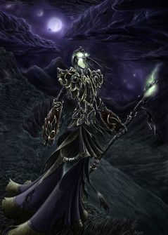
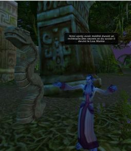
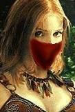
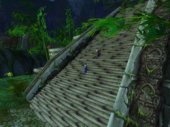
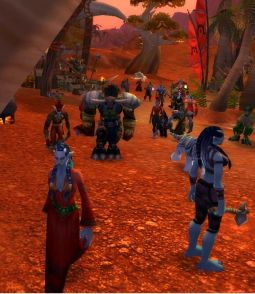

Les Terres de Kirin Tor
Ère du Renouveau [280]
Ère du Conflit [276]
Lune de la Force [66]
Décade du Panda [22]
[Jorian] Arrestation
Sous les ordres de l'Archevêque Benedictus, j'ai été arrêté par le Maréchal MacBride... Ils m'ont retenus un moment dans le Northshire. ... Lire la suite >>>[Slaina] L'arrivée
Slaina parti sans se retournée de sa chere maison,elle le faisait pour son bien et pour le bien de sa mere,elle allait a Stormwind pour apprendre a controler ses pouvoirs ... Lire la suite >>>[Chiron] Celle qui marche dans les Ombres - Claira
Elle se réveille brusquement, le cur battant, la tête lourde. Elle a encore en bouche un goût désagréable, une angoisse sourde mêlée d'une vague colèreLes événements de la nuit précédente lui reviennent en mémoire, avec une acuité douloureuse, et commence alors en elle le ... Lire la suite >>>Seconde Marche pour la Paix
[Evénement divers]
Seconde Marche pour la Paix, organisée cette fois par les membres de l'Alliance, en réponse à l'initiative de la Pax Legatum. Les pacifistes sont nombreux et determinés.
[Jorian] Rencontre avec Ystër
Seconde Marche pour la Paix, organisée cette fois par les membres de l'Alliance, en réponse à l'initiative de la Pax Legatum. Les pacifistes sont nombreux et determinés.
C'est là que j'ai rencontré cette femme du nom d'Ystër... Encore une rencontre qui devait bouleverser ma vie. ... Lire la suite >>>[Ystër] Ystër rencontre Jorian
Je ne pense pas que tu te souviennes de notre rencontre. Je me permets de te tutoyer, Jorian, j?espère que tu ne t?en offusqueras pas, mais je ne te considère plus comme un inconnu.[Mauldred] La Bataille d'Undercity
Notre rencontre ?
Cela remonte à si loin... Je m?étais réveillée avec une migraine épou ... Lire la suite >>>
Cela fait longtemps que je n'ai point pris la plume. Trop longtemps. Mais aujourd'hui fut un grand jour, un jour de gloire mais aussi un jour de trajédie et de pleurs. Laissez-moi vous conter...Procès de Jorian et Ystër
La Bataille d'Undercity
Cela fait ... Lire la suite >>>
[Evénement procès]
Procès de Jorian et Ystër. Le premier est accusé par l'Archevêque Benedictus d'avoir enffreint le Pacte de Non-Aggression, et la seconde d'avoir touché à des Magies interdites. L'assistance leur évite la peine de mort. Ils sont condamnés à servir la Lumière.
[Orosh] L'histoire d'Orosh; acte 14
Procès de Jorian et Ystër. Le premier est accusé par l'Archevêque Benedictus d'avoir enffreint le Pacte de Non-Aggression, et la seconde d'avoir touché à des Magies interdites. L'assistance leur évite la peine de mort. Ils sont condamnés à servir la Lumière.
Acte 14: L'élixir de longue mort...[Lae] Acte II
Je suis resté quelques jours à l'auberge de Moulin de Tarren, le temps que
l'apothicaire Faranell m'envoie l'Elixir de longue mort.
La vétusté des lieux convenait parfaitement à mon état d'esprit du
moment et je ne mis pas un pie ... Lire la suite >>>
Non coupable ![Tymlis] Il va être temps de faire une pause...
Je ressors à peine d'un procès rocambolesque qui vient de se tenir à la cathédrale de Stormwind ! On y jugeait à corps et à cris un homme coupable d'avoir tenté d'zigouiller le dirigeant de la flamboyante Horde, un z'Homme dénommé Jorian, surnommé par plein ... Lire la suite >>>
[Lethiel] Dix-huitième jour depuis l'Eveil...De fil en aiguilles, des Wetlands à Dun Modr, de Dun Modr à Arathi, d'Arathi à Stromgarde puis de Stromgarde à Southshore mes aventures m'ont amenées à visiter de nombreux endroits.
Des criques de pirates isolées, des ruines d ... Lire la suite >>>

Nous avons traversé les Tarides ce jour. Il y a longtemps que je ne m'y étais rendu[Orosh] L'histoire d'Orosh; acte 15
Au moins une trentaine d'années, lorsque j'avais quelques amis taurens et que les échanges entre nos peuples étaient pacifiques.
Je me demande parfois ce qu'il est advenu de Ternor le Brav ... Lire la suite >>>
Acte 15: La clef du passé[Orosh] L'histoire d'Orosh; acte 16
J'ignore combien de temps s'est écoulé durant mon étrange sommeil...
J'étais resté dans un état proche de la mort, sans garder aucune
conscience de mon corps... Il ne restait plus que mon âme, perdu dans une
obscurité que les yeux mortels ne ... Lire la suite >>>
Acte 16: Bord est mort...[Chiron] Aux portes de Stormwind
Le temps... Mon corps... Le bonheur... L'Ombre...
De toute ceci, et de bien d'autres choses encore, je n'ai plus la
notion...
Je suis à nouveau une coquille vide dans le noir, comme lors de ma
renaissance parmi les réprouvés...
L'élixi ... Lire la suite >>>
Stormwind.[Jorian] Guérison
Nouvelle capitale du Peuple Humain, refuge des derniers survivants de l'humanité lorsque la belle Lordaeron tomba, symbole de la puissance et de la justesse des Hommes. Ville phare, fleuron de l'architecture des Hommes et ode à l'Alliance des Peuples Libres.
... Lire la suite >>>
Le voile qui recouvrait ma mémoire se perçait peu à peu... Je sentais que mon doux calvaire touchait à sa fin. ... Lire la suite >>>[Edelween] transcription
Les mots s?inscrivaient doucement sur le papier de soie[Ereghion] Lettre 2
Edelween travaillait avec minutie en recopiant les syllabes a la lueur de la bougie.
Ces mots elle les avait déjà vus près d?Uldaman dans la forteresse des Nains sombres
Elle se remémorait les mots tout en effec ... Lire la suite >>>
Et bien, cet entretien s'est finalement trouvé être très intéressant, apparemment, je suis, ou étais, un druide, ou du moins j'en ai les capacités.[Loam] Récit
Je n'en ai vraiment pas l'impression, mais il est formel, et de ce fait j'ai eu droit à un grand monologue (baratin ?) de sa p ... Lire la suite >>>
(effacé) ... Lire la suite >>>[Chiron] Dans les steppes.. - Claira
Claira s'étire et fait jouer ses muscles, s'avance de quelques pas pour contempler, à ses pieds, l'immense désert de sable où elle vit ces temps ci.[Valring] La Furie
Plusieurs lunes se sont écoulées depuis sa promesse à Chiron. Il lui a présenté son clan, ses frères, ses loups, et dans la ... Lire la suite >>>
J'étais assigné à l(avant poste du Capitaine Perrine quand tout est arrivé. Je n'arrive toujours pas a croire qu'une seule de ces créatures ait pu nous mettre à mal. Mais nous ne renoncerons pas, La Croisade Ecarlate vaincra ce mal!Deux cris dans la nuit
... Lire la suite >>>
Mon cri perce la nuit, je suis en train de naître au milieu du troupeau, à la lumière éloignée du feu de joie de notre campement. Le cri d'un autre nouveau-né Shu'Halo me répond ; ce cri s'inscrit en mon âme, comme un appel, comme une réponse ; ce cri est gravé dans mon cur à jamais.
Les voix des Shu'Halo s'élèvent :
« - Albâtre sera son nom
- Ce n'est pas dans nos traditions de nommer si vite nos enfants. Tu ne peux pas décider de son nom ainsi.
- Ces deux enfants sont nés au même moment, leur cris se sont mêlés dès leur premier souffle. Cette enfant a un pelage aussi blanc que le pelage du deuxième enfant est noir. Ces enfants sont liés. »
Un regard se pose sur moi, je le sens, je ne le vois pas, je ne vois encore que des ombres en mouvement autour de moi.
« - Demain, est le jour de l'Ouverture, demain nous levons le camp. Les familles de la tribu vont se séparer, pour retrouver d'autres familles de notre clan, et de nouvelles tribus vont se reformer. Ainsi se fait l'Ouverture, elle renforce les liens du clan en défaisant et refaisant les liens des tribus, tu le sais. Ces enfants ne se retrouveront que lorsqu'une prochaine Ouverture les réunira à nouveau dans la même tribu. Mais ce temps là est lointain. Ces enfants sont liés et nous devons laisser en eux une trace de ce lien dès à présent. »
Un murmure conciliant s'élève autour de moi, un murmure où s'entremêlent les voix des Shu'Halo de la tribu qui m'a vue naître. Je me sens soulevée par un bras fort ; j'entends le souffle de l'autre enfant posé sur l'autre bras du Shu'Halo à la voix puissante.
« - Cette enfant s'appellera Albâtre, du nom de la pierre blanche et tendre dont la poudre est utilisée dans les potions qui apaisent le mal et la douleur. Et cet enfant tiendra son nom de la pierre noire dont on fait certaines armes et certains ornements, l'obsidienne. Obsidien sera le nom de cet enfant. »
Je sens deux souffles me réchauffer, le souffle de l'autre enfant, Obsidien, sur mon oreille, et le souffle, sur ma tête, du Shu'Halo à la voix puissante qui m'a nommée, qui nous a liés.
[Duvnarel] Verre émeraude - Chapitre 4 - Fuites et poursuites
Les voix des Shu'Halo s'élèvent :
« - Albâtre sera son nom
- Ce n'est pas dans nos traditions de nommer si vite nos enfants. Tu ne peux pas décider de son nom ainsi.
- Ces deux enfants sont nés au même moment, leur cris se sont mêlés dès leur premier souffle. Cette enfant a un pelage aussi blanc que le pelage du deuxième enfant est noir. Ces enfants sont liés. »
Un regard se pose sur moi, je le sens, je ne le vois pas, je ne vois encore que des ombres en mouvement autour de moi.
« - Demain, est le jour de l'Ouverture, demain nous levons le camp. Les familles de la tribu vont se séparer, pour retrouver d'autres familles de notre clan, et de nouvelles tribus vont se reformer. Ainsi se fait l'Ouverture, elle renforce les liens du clan en défaisant et refaisant les liens des tribus, tu le sais. Ces enfants ne se retrouveront que lorsqu'une prochaine Ouverture les réunira à nouveau dans la même tribu. Mais ce temps là est lointain. Ces enfants sont liés et nous devons laisser en eux une trace de ce lien dès à présent. »
Un murmure conciliant s'élève autour de moi, un murmure où s'entremêlent les voix des Shu'Halo de la tribu qui m'a vue naître. Je me sens soulevée par un bras fort ; j'entends le souffle de l'autre enfant posé sur l'autre bras du Shu'Halo à la voix puissante.
« - Cette enfant s'appellera Albâtre, du nom de la pierre blanche et tendre dont la poudre est utilisée dans les potions qui apaisent le mal et la douleur. Et cet enfant tiendra son nom de la pierre noire dont on fait certaines armes et certains ornements, l'obsidienne. Obsidien sera le nom de cet enfant. »
Je sens deux souffles me réchauffer, le souffle de l'autre enfant, Obsidien, sur mon oreille, et le souffle, sur ma tête, du Shu'Halo à la voix puissante qui m'a nommée, qui nous a liés.
Chapitre 4 - Fuites et poursuites[Ereghion] Lettre 3
Lancé à vive allure dans l'escalier en colimaçon de la tour, Arowän, envahi par l'esprit du félin, talonait sa proie. A l'extérieur grondait le tumulte de la tempête qui lui semblait se rapprocher. Il ne savait si Linen Orath survivrait à ... Lire la suite >>>
Finalement, malgré ses envolées lyriques et délirantes, ce brave elfe est très sympathique, et à défaut d'autres choses, il m'a donné un but pour l'avenir.
D'après lui, il est de mon devoir d'emprunter le chemin de la nature, même s'il est manifeste que je sois un druide, j ... Lire la suite >>>
Décade du Gorille [21]
Les Veilleurs de Dun Morogh
[Event Alliance]
En plein coeur de cette Lune de la Force, à l'aube de l'Ere des Conflits, la vieille Garde du Roi Magni sous les ordres de Khem, rejoint le Seigneur Nain Murgond Barbefeu.
Ce dernier est déjà à la tête des Loups Blancs du Roi Magni, un regroupement de jeunes soldats sous la responsabilité du paladin Pilgrim, et de la Communauté de Thelsamar, une société de libres citoyens dirigée par Karakdorn.
Ce jour là, ils se réunissent et forment officiellement l'armée des Veilleurs de Dun Morogh.
[Agon] Souffle
En plein coeur de cette Lune de la Force, à l'aube de l'Ere des Conflits, la vieille Garde du Roi Magni sous les ordres de Khem, rejoint le Seigneur Nain Murgond Barbefeu.
Ce dernier est déjà à la tête des Loups Blancs du Roi Magni, un regroupement de jeunes soldats sous la responsabilité du paladin Pilgrim, et de la Communauté de Thelsamar, une société de libres citoyens dirigée par Karakdorn.
Ce jour là, ils se réunissent et forment officiellement l'armée des Veilleurs de Dun Morogh.
[Phalenopsis] Talah, la naissanceLe vent du monde
Souffle si fort
A qui songe
Le défier
... Lire la suite >>>

Tous des survivants nous étions[Edelween] Les souvenir de WindGnome premier fragment
A travers le monde nous nous sommes trouvés
Lumière, Nature... Nous vous suivions
Amitié, tu nous as tous renforcé
Hasard, merci de cette union !
[justify]Nous sommes tous des survivants... Survivants de la grande guerre contre la légio ... Lire la suite >>>
*Cette page figure sur un livre intitulé « Windgnome une habitante de[Duvnarel] Verre émeraude - Chapitre 6 - Echec et mort
Féérune ? » en dessous on peu noter une ligne effacée récemment « Tauril
Aurait-elle un passage jusqu'à ce monde ? »*
Suite a mon appel une petite troupe du covenant a répondu présent, cela m?a réc ... Lire la suite >>>
Chapitre 6 - Echec et mort[Jorian] La Confrontation avec Aërwen
Arowän porta son regard à l'horizon nord. Là-bas, dans un nuage de poussière et de cendre, un vaste groupe rejoignait le gros des troupes Kelin massée à Methil'Ashan, la dernière cité conquises des satyres. Le jour s'était levé depuis peu ... Lire la suite >>>
Jorian se remémore?[petitefée] commencement
La chose même semble invraisemblable, et pourtant, tandis qu?il galope à bride abattue dans la sombre Forêt de Duskwood, au sud d?Elwynn, Jorian « l?Oubli » se remémore?
Le Procès, d?abord, il y a une semaine de cela? les chaînes, l?agitation? Et ... Lire la suite >>>
Tout débuta le jour ou un joli sanglier arriva à moi avec une lettre sur son collier. J'était d'un étonnement, je la lu et vis que mon maître des prêtres m'appelée à lui pour une mission importante. Quelle joie cela fut pour moi, enfin je l'ai eu. Je vais enfin ... Lire la suite >>>[Kralkena] Révélations à Zul'Farak
Il fait déjà nuit quand le dernier Chef Troll de Zul'Farrack rend l'âme à leurs pieds.[Chiron] Feralas
-Voici ce qu'il en coûte de défier la Horde, lance Köm, vindicatif
Ils sont venus punir les trolls de Zul'Farrak pour avoir défiés la Horde... Ils, ce sont Köm, Kromar, Hogkar et ... Lire la suite >>>
Feralas est une des dernières grandes forêts d'Azeroth, vestige de la gloire passée de Mère Nature. Ses arbres millénaires dont les branchages donnent l'impression de toucher le ciel rappellent à tous les voyageurs de cette contrée combien ils sont peu de choses.[Chantelame] Le Premier Chant - Genèse
La Natu ... Lire la suite >>>
[Jorian] Fin de l'Oubli
Genèse.
Chantelame est né dans les plaines de Mulgore.
La vie d'un jeune veau fut pour lui la première et la plus complète des merveilles : il ne devait plus jamais pouvoir oublier ces délicieux moments passés a brouter les champs a pe ... Lire la suite >>>
Cette falaise fera l?affaire.[Mauldred] le Paladin et la Mort
Jorian, que plus personne n?appellera Jorian « l?Oubli » désormais, met pied à terre.
L?aventure est finie, et le temps qu?il a passé à oublier, encore et encore, est révolu. Il se sent vieux, soudain. Il ne sait pas bien ce qui a pu se p ... Lire la suite >>>
Aujourd'hui devait être un jour de gloire pour l'Alliance et pour la Phalange Écarlate. Mauldred, nouvellement bombardé au rang de chevalier de l'Ordre Écarlate (avec son sabre laser dans le dos ! :D ), a déclaré croisade contre tous les réprouvés, et avait réuni une armée c ... Lire la suite >>>[Aërwen] Le journal d'Aërwen est désenchanté par Jorian
Après plusieurs jours de marche, Jorian épuisé passe les majestueuses portes de Stormwind sous le regard pesant des héros des temps anciens. En temps normal, lorsqu?il revient d?une de ses longues aventures, sa première étape est l?auberge la plus proche, tant qu?il y a de l ... Lire la suite >>>[Edelween] Une piste trops évidente
Theramore?[Sheeana] Je te tuerai, ma soeur adorée
La moiteur du marais était étouffante, quel elfe sensé viendrait vivre ici ?
Edelween progressait en pataugeant dans l?eau stagnante, évitant les raptors, les crocodiles.
Son contact de booty était formel, un elfe a la peau noire avait été aperçu ici.
... Lire la suite >>>
Elle partie, ami, elle est partie. J'ai fait tout ce que j'ai pu pour l'empêcher mais ce fut vain. Sihaya, ma douce sur, a été happée par le Fléau.[Agon] Mog
Après notre mystérieux rêve commun, nous avons choisi de partir en voyage dans Azeroth. Chacune de notre coté. Nous corresp ... Lire la suite >>>
[justify]J'ai rencontré ce jour là un jeune tauren qui s'est proposé pour devenir mon intendant...[Ystër] Ystër adresse une lettre à Jorian
-Je peux vous être très utile maître Agon, m'a-t-il affirmé. Je sais que les aventuriers comme vous ne sont pas toujours très doués pour le commerce. Moi, j'habite à Orgrimma ... Lire la suite >>>
Jorian referme le journal qu?il était en train de lire. Il est assis sous un arbre dans le Parc du quartier des mages de Stormwind. Pensif.[Zunhwyvar] [Le clan Deerantlers] DeerAntlers est mon clan
Il va pour se lever quand une créature s?approche et le regarde, fixement.
"Fichu quartier? Les démonistes laissent leurs diablotin ... Lire la suite >>>
Extrait des notes de Zunhwyvar écrites au refuge de Stonard, au 9ème jour de la décade du gorille (lune de la force).[Agon] Amertume
[color=#CC6735][i]Khaldruff...
Tel est le nom du Tauren que j'ai rencontré cette lune sur les côtes du marais.
Pelage couleur ... Lire la suite >>>
[justify]-Tu ne peux pas me demander ça Rigor, et tu le sais très bien. La honte s'abattrait sur moi, ainsi que sur ta propre famille![Zunhwyvar] [Le clan Deerantlers] La déclaration au clan
Le sergent s'était levé et avait frappé des deux poings sur la table.
-Une vie pour une vie. Tu ne peux plus me le refuser. Agon ne ... Lire la suite >>>
Déclaration de Zunhwyvar aux anciens du clan Deerantlers, nuit du 9ème jour de la décade du gorille (lune de la force). [i][Zunhwyvar] [Rencontre] Grhum le chasseur
[color=#CC6735]"
Je suis Zunhwyvar, fils des esprits et du vent,
longtemps seul, dans des contrées nombreuses, errant,
... Lire la suite >>>
Extrait des notes de Zunhwywvar écrites à l'auberge du marin salé, à l'aube du 10ème jour de la décade du gorille (lune de la force).[Firiel] Une histoire simple
[color=#CC6735][i]La bière des nains est une insulte à l'ordre de Terre Mere. Robe épaisse, nez minéral, goût de t ... Lire la suite >>>
Je me nomme Anil-Gandel, Archidruide d'Aldrassil.
Depuis plusieurs centaines d'années je suis le gardien de l'histoire des Elfes de la nuit. Témoin des plus grandes victoires comm ... Lire la suite >>>
Décade de l'Ours [23]
[Tymlis] Gnomeragan
[Salimoa] Réveil et création du journal -2Mes quelques décades passées à travailler assiduement m'ont fait me rapprocher de la facon de penser des gnomes.
On voit la vie autrement quand on est si petit, on a tendance à tout vouloir miniaturiser. Les gnomes o ... Lire la suite >>>

Apres cette longue journée de sommeil je sens que quelque chose me secoue,[Terra] Prologue: la prophétie de l'Oiseau
j'ouvre les yeux,c'est doolan qui me réveile en pleine forme je me leve et nous allons la ou Doolan a dit,pendant le voyage il regarait les environs méfiants, mais parlait d'un air detacher, et joyeu ... Lire la suite >>>
Prologue : la Prophétie de l'Oiseau.[Earenur] Renouveau
[color=#CDA800]Au commencement il n'y avait que le Neant.
De son vide insondable, naquit son enfant, l'Oiseau de Feu
Qui de son vol enflamma les cieux
Et de l'Air devint l'amant
De leur union naquit la Terre
Qu ... Lire la suite >>>
[justify][ALIORK] CHAPITRE 1 - D'aliork
Voila trois mois qu'il était là, au pied d'Aldrassil, les druides et les prêtres s'étaient penchés sur son cas... Mais rien, toujours rien, toujours ce vertige qui l'envahissait, ces horreurs qui lui revenaient à l'esprit... Il se sentait vraiment mal...
... Lire la suite >>>
CHAPITRE 1 - D'aliork (http://www.lesur.fr/Aliork/chapitre1.htm) ... Lire la suite >>>[Cheena] {Cheena : prologue} Un petit livret jauni
Vous trouvez un petit livret par terre. Deux choix s'opposent à vous... Le lire, ou le reposer, en ignorant totalement son contenu.[Clothilde] Pirates !
Vous observez la couverture. Elle est assez sale, semble avoir vecu. Vous distinguez néanmoins un dessin aux contours dorés. Un cobra entour ... Lire la suite >>>
Sacrés bon sang de pirates ! Je me demande bien pourquoi j'ai accepté cette mission stupide! Ils sont bien trop nombreux, les chiens! C'est pas le poison qui va me sauver la vie cette fois-ci. Ils sont fous ces gobelins, ils pourraient au moins m'envoyer les renforts! Clothi ... Lire la suite >>>[CrileLoup] Prologue - Un éternel recommencement.
[color=white]"Vous avez été choisis, aussi devrez-vous oeuvrer de nouveau."[Ereghion] Lettre 4
La voix terrassante résonnait à l'intérieur comme à l'extérieur de mon crâne et faisaient trembler nos corps chancelants.
[i]"Un nouveau monde a besoin de vous mes amis, mes fidèles serv ... Lire la suite >>>
Je viens de quitter la clairière d'Aldrassil et j'ai rencontré mon nouvel instructeur, il se nomme Corithras Moonrage et réside dans le village de Dolanaar ou je suis hébergé actuellement. Mardrant a eu la bonté de me confier 2-3 taches à accomplir et de me rémunérer pour ce ... Lire la suite >>>[Cheena] {Cheena} Lettre nouvelle
[i]Cher... *rature* Il faudrait que je te trouve un nom. Comme ça, chaque page remplie sera comme une lettre. Je vais t'appeler... Menitra. Tu seras comme un fantôme intime, comme ça ![Cheena] {Cheena} Ganaan
Chère Menitra,
Je commence une vie nouvelle. Nouvelle vie, nouvelle demeure, nouvell ... Lire la suite >>>
[i]Chère Ménitra,[Tymlis] Un certain Kohrin, et une certaine grotte
J'ai fait l'heureuse rencontre aujourd'hui d'un homme que mes vêtements rapiécés et ma dague abimée n'ont pas repoussé. Il a voulu me parler en privé, à moi ! Oui, je sais que je n'étais pas la seule, mais c'est reconfortant... Je t'avoue que j'esperais ... Lire la suite >>>
[Ärcana] Prélude
Nous étions ce jour là à Booty Bay (un coin paradisiaque si vous voulez mon avis ! La mer est limpide, les gobelins plutot enclins à discuter technique et leur alcool n'est pas désagréable) quand Liki me dis "Tiens, ... Lire la suite >>>
Ärcana, jeune humaine, de 7 ans[Terra] Un nouvel espoir...
Ärcana était la fille d'une mère enlevée par les réprouvés et emprisonnée dans les sous-sols d'Undercity, ainsi que d'un vieux paladin (Xaticlin), maintenant décédé de vieillesse. Elle a oublié le nom de sa mère en devenant réprouvée. ... Lire la suite >>>
Chapitre 1 : Un nouvel espoir....[Earenur] Plus long que prévu...
[i]...Celà faisait maintenant une semaine que la petite Terra errait dans l'île de Telrassil, vivant d'expédients et de menus travaux...
...Elle avait comprit dans ces paysages chatoyants les dires de sa Petite Maman, qui ... Lire la suite >>>
L'heure était venue, il faisait sombre, seules quelques sentinelles étaient éveillées. Earenur pris l'arc que son pére lui avait offert deux jours plus tôt aprés que la battaille l'ai sorti de sa létargie, sa famille et ses amis étaient tous heureux qu'il en soit... ... Lire la suite >>>[Ärcana] La Naissance d'une réprouvée
La veille, son père lui ayant dit d'aller dans les tarides, pour aller caresser une Zevra (Ärcana aimant tant les chevaux)[Syldur] [BD] Syldur, la Quête d'un Exilé
Son père savait déja... il allait rejoindre les esprits dans peu de temps, mais le cachait à tous...
pendant qu'Ärcana était partie, son père s' ... Lire la suite >>>
Je vais tenter ici de retranscrire l'histoire pré-WoW de mon personnage, le mage haut elfe Syldur Windstrider, en bande dessinée.[Alathorn] La voix du Paladisme
Pourquoi la bande dessinée? Parce que je trouve cela plus original que le simple récit, comme beaucoup de gens le font, et en plus j'aime bea ... Lire la suite >>>
Deux coups résonnèrent dans la petite pièce qui me servait de chambre et deux hommes entrèrent. L'un était vêtu d'une longue toge blanche et l'autre portait une armure de garde. L'homme à la toge blanche prît la parole : « Alathorn, votre père est décédé, je suis désolé de d ... Lire la suite >>>Batailles et Escarmouches
[Mise à jour - Champs de Bataille]
Des conflits éclatent dans les montagnes d'Alterac et au Goulet de Warsong. Escarmouches ou grandes batailles, il ne s'agit pas encore d'une guerre totale. Les pacifistes sont cependant terrifiés.
A Stormwind, le Généralissime Bolvar reprends le pouvoir des mains de l'Archevêque Benedictus.
[Cheena] {Cheena} Kaëliss
Des conflits éclatent dans les montagnes d'Alterac et au Goulet de Warsong. Escarmouches ou grandes batailles, il ne s'agit pas encore d'une guerre totale. Les pacifistes sont cependant terrifiés.
A Stormwind, le Généralissime Bolvar reprends le pouvoir des mains de l'Archevêque Benedictus.
[i]Chère Ménitra,[Nohan] Qui suis je....
En attendant Ganaan, je remplis les contrats que les gens me confient. Plus ça va et plus on me confie des contrats importants. Les ennemis publics numéros un ici sont les Défias... Ils portent les mêmes masques que celui que j'ai gardé de toi... Mais pe ... Lire la suite >>>
Je suis Naolin'Ja la tourmentée, Siid'Jin la rêveuse.[Kerandhil] Doute
Je suis descendante d'une famille qui a trop prié ces demi divinités inférieures, et leur faiblesse s'est abattue sur moi telle une malédiction. Je suis Naolin'Ja la maudite, Siid'Jin la respectée.
Lorsque ma mère ... Lire la suite >>>
Le temps s'écoulait lentement, mais déjà la lune s'élevait au-delà des montagnes neigeuses de Winterspring. La forêt demeurait silencieuse et calme. Les doux rayons de lune flottaient dans l'air, comme voulant bercer tendrement quiconque qui aurait besoin d'être rassuré.
... Lire la suite >>>
Lune d'Agilité [112]
Décade du Tigre [36]
[Tymlis] Retrouvons l'expédition
[Ilúvatar] Former une équipée
Je suis ensuite retourné aux Badlands, on m'avait encore parlé d'une expédition de confrères nains perdus dans cette région, ainsi que d'un complexe nommé Uldam ... Lire la suite >>>


Il ne faut pas oublier les missions sur lesquelles je me suis engagée en pays Elfe...La visite de stormwind devra etre rapide. Je croise humains et gnomes à foison, mais j'hesite à les aborder. C'est pourtant le moment où jamais de trouver des alliés. Mais il me faut des per ... Lire la suite >>>[Cheena] {Cheena} Faucheurs Nocturnes
[i]Chère Ménitra,Marché de Thelsamar
Kaëliss devient comme un grand frère pour moi. Je fais des progrès considerables en sa compagnie.
Ganaan l'a rencontré, le courant ne passe pas très bien entre eux... Il m'a quand à lui présentée à une certaine Rose Noire. Je ne l'aime pas non plus ... Lire la suite >>>
[Evénement marché]
La communauté de Thelsamar offrent aux peuples libres d'Azeroth un échappatoire à l'âpreté des Conflit en organisant un grand marché, festif, où toutes les races de l'Alliance sont conviées.
[Lethiel] Dix-neuvième jour depuis l'Eveil...
La communauté de Thelsamar offrent aux peuples libres d'Azeroth un échappatoire à l'âpreté des Conflit en organisant un grand marché, festif, où toutes les races de l'Alliance sont conviées.
Asran, l'ami de mes parents que je veille depuis quelques semaines a rejoint Elune ce jour J'ignore si je devrais être plus triste que je ne le suis. Après tout, je ne le connaissais pas assez pour avoir eut une relation d'amitié vraiment élaborée avec lui.[Jorian] Tanaris
Il ne m'a connu ... Lire la suite >>>
Je chante Tanaris, où je venais chercher refuge...[Cheena] {Cheena} Grey ?
Tanaris, brûlante, dévorante, à perte de vue...
Tanaris, dont le sable infiltre mes poumons...
Tanaris... dernier escale d'un trop long voyage.
*Jorian tombe à genoux*
Oh... Tanaris, je t'aime...
( ... Lire la suite >>>
[i]Chère Ménira,[Adalynn / Halaa] La mission Top secréte de l'agent S
Ganaan m'a fait part d'une nouvelle effrayante... Nous avons des ennemis ! Grey, et son sbire Jierdan. Grey veut tuer Ganaan... Il s'agirait d'un lieutenant du prince Arthas, le Roi Liche. Je me renseignerai sur ce dernier plus tard. Pour le moment, je me ... Lire la suite >>>
'Succube d'un soir, espoir.[Zunhwyvar] [Cycle Khaldruff] L'absence de Khaldruff
Succube tout les Matins, chagrin '
Vieux dicton Démoniste
- Que la peste noire les étouffes, maudite maréchaussée !
- Comment ? vous avez un problème avec l'autorité jeune fille ?
La jeune femme aux cheveux ... Lire la suite >>>
Extrait des notes de Zunhwyvar écrites dans la taverne de Gadgetzan, au 4ème jour de la décade du tigre (lune de l'agilité).[Kyllen] changer z'avez dit....? pourquoi pas...
[i][color=#CC6735]Encore seul...
Cette nuit, Khladruff n'est pas venu.
Cette nuit, je suis seul.
Mais je ne peux ... Lire la suite >>>
"Ma petite jeune fille... je ne peux vous bénir...les filles des rues ne le méritent pas..."[Cheena] {Cheena} Sentiment nouveau : jalousie
Les mots avaient claqués comme un fouet. Pourquoi....?
Tous les gosses de la ville la regardaient à présent. Ses joues s'empourprèrent lentement tandis que ses yeux s'emplissaien ... Lire la suite >>>
[i]Chère Ménitra,[Tymlis] Petite fete pour la paix à Booty Bay
Tu sais quoi ? J'avais raison au sujet de la Rose Noire et de Ganaan ! Elle s'appelle Elenore. Il aurait fallu être aveugle pour ne pas reconnaitre ses beaux yeux bleus, qui contrastent autant avec sa chevelure d'ébène... Je comprends pourquoi Ganaan est ... Lire la suite >>>
[Terra] Une étrange étoile
Ce jour là, je ne l'appris que beaucoup plus tard, se tenait la 3ème marche pour la Paix, habituellement une marche rassemblant des dizaines de personnes de tout a ... Lire la suite >>>

Chapitre 2: une etrange étoile ....[La souris] Milles vies
"31...30...29"
[i]...Terra nageait en de longs mouvements de bras, ressemblant à un oiseau si sa cambrure de jambes jointes à la surface de l'onde noir du large des côtes de Sombrerivage aurait p ... Lire la suite >>>
J'avais vecu milles fois, milles aventures.[Ereghion] Lettre 5
J'avais rit milles fois, milles fois j'avais pleuré.
J'avais vécu tant de fois, cherchant sans le savoir l'unique vie.
Je n'ai su que je la cherchais, qu'une fois que je l'eus trouvé...
Il y avait eu reponse à mon insolente p ... Lire la suite >>>
Quelle horreur, toutes ses créatures corrompues, mon malaise ne diminue pas.[Cheena] {Lettre} Copie : à Ganaan.
Denalan est un herboriste vivant près du lac Al'Ameth et il s'inquiète énormément pour les Sylvains. Et à voir autour du lac, je crois bien qu'il a raison. La corruption de l'environnement est te ... Lire la suite >>>
[i]Mon cher ami Ganaan,[Cheena] {Cheena} Coupable ?
Je t'ecris ici parce que je sais que le papier du Goldshire est beaucoup trop etroit pour ce que j'ai à te dire...
Premièrement.
Il ne m'est pas possible de crier et de taper du pied sur du papier, mais si je t'avais en face, je me pe ... Lire la suite >>>
[i]Chère Ménitra,[Edelween] Ordre officiel de l'alliance
J'ai plaidé pour Ganaan, je te le jure ! J'ai dit tout le bien que je pensais à son sujet, et toute mon admiration... J'ai même avoué à Elenore que j'avais un petit faible pour lui depuis que je le connaissais. Tout ça n'a servi à rien... Mais ce ... Lire la suite >>>
*Une note écrite avec soins et finesse est affichée dans la partie privé de la salle commune*[Metazel] Mort.
Par ordre du Commandeur Bolvar Fordragon j?ai la charge de monter une armée afin de mettre fin aux agissements de Nathanos Blightcaller et de ses alliés.
A la condition que le ... Lire la suite >>>
Aujourd'hui, j'ai un an de plus.[Cheena] {Cheena} Elenore
J'eus envie de fêter ceci avec mon meilleur ami et allié, Mikkerag, avec qui je parcours le monde depuis nôtre rencontre, il y a si longtemps.
Avec l'aide d'un mage, je regagnais Darnassus en quelques secondes, et je me mis a courir au quar ... Lire la suite >>>
[i]Chère Ménitra,[Turannos] Arrivée à Stormwind
Je suis déconcertée. Il me vient une bouffée de sentiments differents que j'ai du mal à séparer. Le trouble que ce dont je t'ai parlé dans ma derniere lettre a provoqué en moi est trop grand... Mère... Ele m'a dit "je t'aime"...
Ai-je eu raison de lui r ... Lire la suite >>>
Je progressai sur une grande allé, de chaque coté était visible d'éminentes statues aux figures de valeureux qui avaient marqué les mémoires des hommes ; au loin, je distinguai de prodigieux monuments admirablement réalisés ; la cité de Stormwind !,[Cevi] Le père
J'avais toujours spécul ... Lire la suite >>>
[i] La nuit est tombée depuis quelques heures déjà. J'ai laissé Camylle se reposer et je suis parti marcher dans la vieille ville. J'ai l'impression d'avoir un sourire idiot sur le visage depuis quelques jours maintenant. Je songe à peut-être remettre mon masque puis je reno ... Lire la suite >>>[Tymlis] Les Nuits Eternelles au monastère
[Gwendolline] Compte rendu de la 1er Convention Médical de StormwindLes Nuits Eternelles...
Voila le nom de la guilde de laquelle font parti Thamiior et Likimeya.
Qu'est-ce que cela peut bien vouloir dire, je n'en sais rien, j'avoue ne jamais leur avoir demandé. Et puis il est trop tar ... Lire la suite >>>

* Une affiche dans Stormwind à l'entrée de la Cathédrale *[Sheeana] Sheeana, maitre assassin
[quote]
La réunion qui s'est dérouler le 7 ème jour de la décade du Tigre à réuni les membres de la Red Cross, Les membres de l'Ordre des Hospitaliers, les représentants de l'Ordre impérial, de la Garde de Stormw ... Lire la suite >>>
J'ai reçu aujourd'hui une convocation de la part de maître Anishar à Darnassus.[Ereghion] Lettre 6
Citation:
Darnassus, le 6e jour de la décade du tigre
Bien le bonjour Sheeana,
Veuillez vous rendre dès que possible à Darnassus dans notre repaire. J'ai en effet le plaisir de vous i ... Lire la suite >>>
Darnassus : Cette ville est très belle, mais il lui manque quelque chose, les habitants sont ........ inquiets.... des gardes patrouillent, les soldats fourmillent, ou est la sérénité tant vantée ?[Cevi] Torture
Dans le temple d'Elune peut-être, bien que la première personne à m'accueill ... Lire la suite >>>
[i]J'ignore si ce sont mes larmes qui brouillent ma vision ou si il s'est arrêté mais Ilmerick semble maintenant regarder son bras plutôt que moi. Son visage, qui affichait une joie malsaine, se déforme désormais sous la rage tandis que son regard descend le long de son bras ... Lire la suite >>>[Prothex] Il me manque en ce jour béni
J'ai mis deux semaines pour réunir tous les produits nécessaires à la confection de cette robe, mais qu'est-ce qu'elle est belle. Non, vraiment je ne regrette pas tout ce temps passé, tout cet argent dépensé... C'est ma robe de mariage, après tout ! Un événement très importa ... Lire la suite >>>[Agon] Jour de fête
[Zunhwyvar] [Cycle Khaldruff] L'épreuve de KhaldruffIl y eut ce jour là
Comme un air de fête
Quelque chose d'indéfinissable
Une lumière plus lucide
Embaumant tous les coeurs
Une joie sans raison
Emanant des parfums
Les baies sauvages
Goûtaient si fort ... Lire la suite >>>
Extrait des notes de Zunhwyvar écrites à la taverne d'Orgrimmar, au 10ème jour de la décade du tigre (lune de l'agilité).[Ereghion] Lettre 7
[i][color=#CC6735]Darzag a raison. Terre Mere a pris Khaldruff pour une nouvelle épreuve.
Ce chemin, il ne doit pas l'arpent ... Lire la suite >>>
J'ai découvert Moonglade et c'est un lieu magique, et même des gardes armés à chaque détour ne peuvent perturber tout à fait ce lieu magnifique, la sérénité n'est toujours pas ici, mais en méditant dans les ruines du refuge de Malfurion, j'ai approché ce lieu béni ou l'être ... Lire la suite >>>
Décade du Singe [39]
[Saarht] Début des récits de Saarht
2 ième jour de la décade du Singe, ère du conflit[Nohan] L'Empereur (extrait du journal de Nohan)
Il est grand temps pour moi de penser sérieusement à écrire?.non seulement ça occupe mes soirées aussi agréablement que de descendre une chopine avec un ami nain, mais qui sait, peut être ces écrits pourront ils servir? C? ... Lire la suite >>>
[Kehlim] Dun Morogh.Lune Noire, Cycle de Baron Samdi, 2ème jour,
(...) Klom'Ak, Kezaral et mon amie Sunkhar terrassaient les marins à l'intérieur du fort, la petite voleuse ayant sans doute réussi à les convaincre de l'accompagner dans son op ... Lire la suite >>>

Marre de c'te neige, marre du hurlement des loups à vous glacer l'dos et des promenades qui n'en finissent pas entre Gol'bolar et la haute Ironforge.[Zunhwyvar] [Cycle Khaldruff] Enquête solitaire
Un temps ça va mais là j'en peux plus. Vrai quoi, j'suis Kehlim Ventardif, pas l'premier v'nu ! Le Nid-de-l'Aigle me manque ... Lire la suite >>>
Extrait des notes de Zunhwyvar écrites au poste du vent libre, au 2ème jour de la décade du singe (lune de l'agilité).[Chiron] Maijstral - Claira
[color=#CC6735][i]Ainsi, après le conseil de Revantusk, j'ai pris immédiatement la route des Milles pointes à la recherche du ref ... Lire la suite >>>
Le ciel est bas, terriblement bas, et l'odeur suffocante.[Loam] Récit
Des collines de Hillsbrad elle a galopé tout le jour, progressant vers le nord, à la rencontre de ces terres maudites, comme brûlées, qu'elle découvre pour la première fois. Elle a vu se lever devant elle un soleil ... Lire la suite >>>
(effacé) ... Lire la suite >>>[Saarht] Premiere feuille, les Carmines
3ième jour de la décade du Singe, ère sanglante[Terra] la fin d'un prophète
Bien, je me retrouve sur les lieux de mes premières « vrais » aventures : les Carmines?que de souvenirs? Cette région est plutôt aride, mise à part le lac Placide et le petit filet d?eau en découlant, filant tout droit vers ... Lire la suite >>>
Chapitre 4 : ... la fin d'un prophète...[Terra] La Transe des Ombres
Assise sur un banc de marbre blanc, notre jeune elfe aux cheveux emeraude scrutait avec attention une etrange missive lui étant parvenu, d'une signature qu'elle ne connaissait pas.
Le message était accompagné d'une ... Lire la suite >>>
Chapitre 5 : la transe des Ombres.[Zunhwyvar] [Le clan DeerAntlers] La naissance d'une réprouvée
-"Les ombres Terra, sont comme les gens, elles parlent, elles protègent, elles vivent parmis nous, elles nous surveillent, elles nous admire car nous pouvons encore faire ce qu'elles ne peuvent plus ... Lire la suite >>>
Extrait des notes de Zunhwyvar écrites à la taverne d'Orgrimmar, au 3ème jour de la décade du singe (lune de l'agilité).[Ereghion] Lettre 8
[color=#CC6735][i]Ärcana...
Tel est le nom de la petite protégée de Darzag. Il aurait pu être Dremona, tant elles se ressem ... Lire la suite >>>
Ce druide est une honte pour notre peuple, sa façon d'être est une insulte à la politesse et au respect, mais bon, ce qu'il demande est raisonnable, et je ne vois pas comment refuser.[Tymlis] Petite confusion...
Enfin en tout mal, réside un bonheur caché.
J'ai rencontré une jeune prêtresse du nom de ... Lire la suite >>>
[Saarht] Darkshire, bois de la pénombreSi vous êtes déjà allé dans les Hautes Terres d'Arathi vous avez sans doute entendu parler de cette histoire, celle de Trélane. Etrange histoire vous en conviendrez.
Le plus étrange est qu'elle pique la curiosité d ... Lire la suite >>>

4ième jour de la décade du singe, ère sanglante[Kehlim] Loch Modan.
Auberge de Darkshire?.je ne me souviens plus trop du voyage entre les Carmines et ici, si ce n?est que je l?ai fait en compagnie d?un sacrée mal de crâne?ne pas mélanger la bière et le rhum, c?est plus explosif que ces satan ... Lire la suite >>>
J'aime bien le Loch. Ca m'rappelle chez moi. Mais j'ai vite déchanté. Engagé à la va-vite dans la milice, j'ai risqué mille fois ma vie contre des troggs enragés. Tout ça pour du pain, toujours du pain. Foutu estomac.[Zunhwyvar] [Cycle Khaldruff] La menace de Kalarn
J'ai prit l'habitude de boire, que faire d'autre ? J'ai ... Lire la suite >>>
Lettre de menace reçue par Zammalthor, Dargum du clan, et lue aux Deerantlers lors du POWOW de l'agilité.[Radjah] [Radjah/Pensées de Manzo I Insomnies]
[color=red]Trop de questions ont été posées !
Trop de regards indiscrets ont été jetés !
Nous avons vu le troll venir fouiller dans le ti ... Lire la suite >>>
[i]Vous trouvez un petit journal gnome, au pied d'un coffre, oublié à l'auberge. Lorsque vous l'ouvrez, vous n'apercevez que des pages blanches. En regardant de plus près, les lignes scintillent de petites runes et l'histoire s'écrit au mot à mot tandis que vous la lisez. Ce ... Lire la suite >>>[Nohan] Première cérémonie
Lune Noire, Cycle de Baron Samdi, 5ème jour. (Extrait du journal de Nohan)[Kehlim] Menethil, enfin.
(...) La première cérémonie d'Orac Loa est dédiée au Prince de la Mort. Est-ce un présage ? Si c'est le cas j'espère qu'il est positif, annonciateur de la bonne réussite de notre croisade et non pa ... Lire la suite >>>
A moi la gloire ![Edelween] La Nuit
Busards de la montagnes, tout nain que vous êtes, que dites-vous de cela, hein ?! Kehlim mercenaire, reconnu pour ses mérites ! J'ai beaucoup bu pour fêter l'événement.
Menethil est plus glauque, plus délabrée qu'à mon souvenir. Pourtant, c'est un lie ... Lire la suite >>>
Edelween s'agitait dans sont lit[Zunhwyvar] [Cycle Khaldruff] L'échec
Le rêve était agréable au début de la nuit, elle se promenait doucement dans une bibliothèque couverte de livre qu'elle ne connaissait pas.
Elle en pris un et l'ouvrit, passionner par le récit qui lui était inconnue elle ne prêta pas ... Lire la suite >>>
Extrait des notes de Zunhwyvar écrites au refuge de Revantusk, au 5ème jour de la décade du singe (lune de l'agilité).[Zunhwyvar] [Cycle Khaldruff] POWOW de l'agilité
[i][color=#CC6735]Quand Darzag me tendit le message noir, j'eu du mal à contenir mon émotion.
Le papier en était propre et gran ... Lire la suite >>>
Extrait des paroles échangées lors du POWOW de l'agilité[Zunhwyvar] [Le clan Deerantlers] Zammalthor, orc et chaman
Gorfanor était hors de lui. Une colère inhabituelle se lisait sur son visage. La haine emplissait petit à petit son coeur. Epaulé par les siens, il finit par se calmer. La colère n'était pas u ... Lire la suite >>>
Extrait des notes de Zunhwyvar écrites au refuge de Revantusk, au 5ème jour de la décade du singe (lune de l'agilité).[Loam] Récit
[i][color=#CC6735]Si Darzag est le père du clan, Zammalthor en est le fils et le saint-esprit tout à la fois.
Lors de notre der ... Lire la suite >>>
(effacé) ... Lire la suite >>>Première Assemblée Druidique
Nous voilà, aujourd'hui, heureux et fiers - je crois, en tous cas je le suis - d'avoir put réaliser cette assemblée Samedi.
Nous nous retrouvâmes à reflet de lune, près du point d'arrivée de notre magie de transport, et peu à peu, les Frères et Soeurs Druides arrivèrent, à leur rythme, certains venaient pour la réunion, d'autres n'étaient que de passage..

..mais l'étonnant réunissement de tout ces Druides provoqua une euphorie particulièrement plaisante :

Au bout de quelques minutes ce fut un véritable festival de Magie Naturelle qui acceuillait les nouveaux venus

L'Heure arriva alors de commencer notre chemin vers le Refuge des Saisons de Stormrage, affin de tenir ce Conseil dont l'Ordre du Jour était encore inconnu.

Poussés par l'instinct naturel, nous bondîmes dans les eaux fraîches du Lac de Reflet de Lune en poussant de long mugissements avant de fendre les flots sous notre forme de Lion de Mer :

Une petite démonstration des pouvoirs de l'équilibre par un puissant Druide Tauren

Puis nous continuâmes vers le Refuge. Un Grand Cercle se forma, comme je m'avancais ainsi que mon confrère Moonlore, au centre de l'endroit, pour commencer le long et fastidieux discours que je voulais présenter à nos Frères et Soeurs Druides :

"Druides d'Azeroth, vous ici présents, je vous salue et vous remercie !
Non pas car vous êtes mes frères et soeurs - car vous l'êtes tous, en coeur, mais car cette assemblée sera je l'espère la première d'une longue suite, si les Esprits le veulent !
Voilà longtemps que nous arpentons la surface de Mère, et assistons à ses joies comme à ses peines. Nous sommes ses protecteurs, enfants chéris en lesquels elle a placé ses espoirs, depuis des millénaires.
Chacun d'entre vous ici présent s'est battu, et se battra encore, pour qu'elle respire et se libère des multiples corruptions qui tentent de la gangréner. Chacun d'entre vous sait les douleurs de la Terre, et j'imagine que chacun d'entre vous en souffre autant que moi !
Je ne veux pas peiner votre Coeur, mes Frères, mes Soeurs. Je ne veux pas dresser la liste de tous les endroits corrompus et de ce qu'ils étaient autrefois, en d'autres temps, car cela ne pourrait qu'éveiller notre colère et le temps de la Rage n'est pas encore venu.
Je sais qu'il y aura toujours des âmes nobles pour tenter de les soigner, malgré le travail de Titan que cela représente, nous avons le courage nécaissaire pour cela, nous sommes Druides!
Taurens et Elfes savent que les peuples -dans leur ensemble- ne se soucient pas de la santé de la Terre.
Les Nains creusent des mines de plus en plus profondes, perçant la chair de Mère parfois contre son gré et la laissant exsangue, affin de tirer d'elle le minerai dont ils forgent leurs armes...
Les Orcs déboisent l'ancienne forêt d'Ashenvale, détruisant une oeuvre que Mère mis des millénaires à réaliser, dans le but de créer des machines de guerre toujours plus puissantes *semble se gorger de colère en disant cela, puis se reprend*
Les Humains respectent la Nature, en partie car elle leur apporte le calme et attise leurs émotions, mais ils ne saisissent pas, ne comprennent pas comment apréhender son équilibre qui s'étale à trop grande échelle pour des créatures dont le cycle de vie est un battement de coeur à l'échelle de Mère..
Les Trolls vivent sauvagement depuis des lustres, et en harmonie avec leur environnement, mais malgré leurs pratiques ancestrales et leur rituels, leur véritables intentions restent un mystère! Et j'ai vu, comme certains d'entre vous, l'Ombre d'Hakkar! Qui peut prétendre savoir ce dont ce peuple - malgré ses clans différents - est capable?
Les Gnomes sont simples et curieux de tout, mais leur curiosité justement presque maladive les pousse à inventer chaque jour des machines plus étranges, des procédés plus complexes, qui manipulent des mystères que nous ne pouvons appréhender qu'une fois leur résultat dévoilé! Regardez ce que l'ingénierie a fait de Gnomeregan ! Qui pouvait penser que leur inventions puissent altérer la substance de la Vie?
Les Réprouvés.. Nul ne peux prétendre non plus savoir réellement leurs intentions. Je ne porte aucune accusation - j'ai eut trop de colère et de haine aveugle contre eux déjà - mais je suis Druide, et je sers la Vie ! Je ne peux que me méfier de ceux qui ont brisé le cycle de l'équilibre en surpassant la Mort. Pourquoi voudraient ils défendre ce qu'ils ont perdu? Qui le leur rendra? La rumeur d'un nouveau Fléau circule, et au delà des humains, de l'alliance ou de la horde, c'est la Terre dans ses fondements qui en pâtira, sans que cela soit réversible.
Nous avons tous, ici, des amis qui font partie de ces peuples ! Qui partagent nos joies, nos peines.
Mais lorsque nous les regardons, nous les voyons tous déchirés entre eux, les vengeances et les complots fleurissent, de sombres machinations voient le jour de par le monde !
Que les Esprits me piquent, si je me trompe, mais qui d'entre eux pense en terme d'équilibre? Qui se soucie réellement qu'au delà de la prospérité d'un tel ou de tel autre, subsiste la seule chose qui fut présente avant nous et le sera - peut être - après?
Qui se soucie de Mère Nature !?
Personne à part des individus isolés, trop justement pour pouvoir changer les choses..
C'est à nous, Druides, qu'à été confiée cette tâche.
Cenarius nous a fait confiance. Il nous a appris à parler aux plantes, aux animaux, pour comprendre leurs maux et les guérir. Il nous a enseigné la Magie de la Nature, pour pouvoir soigner notre prochain, préserver l'équilibre, et défendre nos aimés.
Il nous a enseigné le language des Esprits, pour que nous puissions accéder à la conscience du Monde. Enfin, il nous a lié au Rêve d'Emeraude pour que nous puissions traverser les Ages et veiller sur nos peuples, mais aussi sur Azeroth!
Si les Esprits nous voient réunis ici, c'est parcequ'un mal ancien - que nous connaissons tous - voit à nouveau le jour.
Taurens, Elfes de la Nuit ! Nous sommes liés par l'honneur à deux camps qui s'opposent, malgré notre but commun, malgré notre douleur partagée!
J'ai nourri l'espoir de voir le bruit des combats cesser ! Nos alliés se sont unis par le passé, pour triompher du Mal Absolu ! Nous devions aborder une Ere de paix, de renouveau !
Aujourd'hui, et car certains ont planté les graines de la discorde, fleurissent la rancoeur, la vengeance et la haine. Oubliée, la venue de la Légion ! Oublié le Fléau !
Le véritable mal - en ces temps où non seulement la Terre souffre, mais la Vie est menacée - est bien la Guerre entre l'Alliance et la Horde ! Le traité est plus fragile que jamais, ce n'est qu'une question de temps avant que ne se brisent les accords de non aggression qui sauvegardent le peu de quiétude qu'il reste encore !
Elle est le fruit de l'incompréhension. Elle est le fruit de l'intolérance. Elle est le fruit de la folie, et mène à la mort. La Guerre laissera Mère exsangue. Elle nous forcera à nous battre entre Druides ! Pour honorer notre serment à nos alliés !
Nous ne pouvons laisser cela arriver. Nos véritables ennemis doivent jubiler dans leurs Antres de nous voir nous épuiser les uns contre les autres. Soyez sûrs qu'ils saisiront le moment opportun pour tous nous écraser!
Au delà de nos vies, mes Frères, que je suis certains que vous tous - comme moi - donneriez sans hésitation, au delà des vies de nos amis, de nos alliés... C'est Azeroth la Grande qui périra.
Un proverbe Tauren dit : " On ne lègue pas la Terre à nos enfants. Ce sont eux qui nous la prêtent."
Faisons en sorte que ces derniers soient satisfait de l'état dans lequel nous leur rendrons le Monde. Montrons l'exemple à nos alliés, peut être réaliserons t'ils leur immaturité et leur égocentrisme, leur soif malsaine de pouvoir et de puissance.
Nous, Druides, avons la conscience que nous ne sommes rien, comparé à l'immense complexité et beauté de Mère nature, sa générosité, sa patience, l'amour qu'elle porte à ses enfants.
Lorsque deux Druides se croisent, ils devraient se serrer dans leurs bras, sans être nourris de la peur de la violence.. Refusons les combats ! Nous ne nous battrons que contre nos ennemis communs ! L'Amour que je porte à tous mes Frères est plus grand que la force de la Haine. Ne nous ignorons plus, montrons à tous que nous sommes présents, et voyons, et ressentons le danger, et avons décidé de marcher main dans la main !
Nous allons partir, si vous le voulez, si mes paroles vous touchent, dans une longue cavalcade, côte à côte, sans peurs et sans doutes, montrer à tous que les Druides refusent l'état des choses. Prouver que nous ne voulons pas de Guerre, pas de celle là !
Je terminerais par un mot simple :
PAIX !"

Je fus ravi de voir à quel point tout ceux qui étaient présents, Taurens comme Elfes, répondirent à cet appel à la quiétude et à la tolérance.
Mon Cher Frère Moonlore - avec qui nous étions liés par les Esprits de la Nature à cette occasion, transcrivi le discours dans la noble langue des Taurens.
Ainsi vint le moment de partir vers Gangrebois :

Le passage des Grottes fut bien moins complexe que prévu, et j'en remercie notamment Gortard, Frère Tauren, et Kink, Frère Elfe, pour m'avoir aidé à protéger les plus jeunes d'entre nous de la rage aveugle des Furlbogs qui ne voyaient pas en eux de jeunes protecteurs de la nature mais plutôt une réserve de viande innoppinnée.
Après quelques minutes dans les cavernes, nous débouchions dans Gangrebois :

La Meute se mit en route, heureuse de son avancée. Les plus petits d'entre nous restaient protégés par les plus forts, et pas une minute ne passait sans que pleuvent les éclats lunaires sur les créatures corrompues qui tentaient d'attaquer nos novices :

Après un rapide passage par le camp Elfe du Nord, pour montrer le maître des Hyppogriffes à tous ceux qui ne le connaissaient pas encore, un rapide détour par les bois d'Irontree nous permit d'invoquer l'ancien, qui a notre grand malheur à tous, se jetta sur nos Frères Taurens. Tous indignés par le comportement de cette créature de la Nature, nous enjoignîmes nos homologues Taurens de renvoyer l'Esprit dans le Rêve d'Emeraude, sous peine d'y laisser la Vie.

Un peu hagards de ce combat involontaire, nous continuâmes notre descente vers le Sud, et après un arrêt rapide près des Chutes de Bloodvenom pour que les Jeunes Taurens y voient le Maître des Wyvernes, nous croisâmes un Paladin, vétu d'une lourde armure. Tous le saluèrent, puis soudain, continuant notre route, nous entendîmes un cri étouffé suivi d'un ricanement sinistre : le Félon venait de plonger sa lame dans le Dos de Thero'Sha, la plus jeune d'entre nous, une Tauren particulièrement douce et paisible. Nous hurlâmes à nos Frères Taurens de ne point le laisser s'enfuir, et pendant qu'ils stoppaient la fuite de ce misérable cloporte, nous le recouvrions de notre rage immodérée par des qualificatifs oh combien disgracieux.
Finalement, réunis autour du corps de la Jeune et courageuse Thero'Sha, nous attendîmes les Fiers Taurens affin de faire renaître la Jeune Druide.

Le temps passait, et certains de nos Frères et Soeurs étaient appellés à leurs tâches de par le monde, aussi nous pressâmes vers le Sud pour atteindre Ashenvale :

A l'arrivée dans les Tarides, l'odeur de savane et le vent chaud du désert poussèrent tout le monde d'un même élan à adopter la forme de guépard, réunis autour de notre courageuse Thero'Sha - très génée d'être le centre de l'attention :

La meute se dirigea vers La croisée des chemins, dans le but de prouver notre lien de Coeur entre Druides à la Horde.

Première Rencontre face aux portes Nord :

Puis face aux portes Est, comme nous nous préparions à partir pour ratchet:

Moins nombreux, car le temps filait bon train en de si bonne compagnie, mais toujours aussi vaillants, nous prîmes le bateau pour booty bay :

La traversée de StrangleRonce aurait put se passer bien, si nous n'avions à nouveau croisés un Paladin ( Par Elune sont ils tous pareils? )

Qui attendit que nous passâmes pour attaquer Thero'Sha accompagné d'un Chasseur passant dans les environs. La jeune Tauren fut encore une fois mise à mal, et ses assaillants purent s'enfuir - malheureusement.

Un détour par l'Arène semblait nécaissaire pour calmer notre rage, aussi nous nous y rendîmes, surprenant quelques voyageurs de passage :

Un combat amical fut alors organisé, par équipe de deux : Ventdeplaine, et Moonlore, face à Eaworade et Duldir :

Les Elfes sortirent vainqueurs du combat qui fut pourtant serré et agréable à regarder :

Enfin, heureux, et fatigués, nous terminâmes notre procession vers le Nord, au Bosquet du Crépuscule

Et nous nous réaffirmâmes notre inconditionnelle amitié mutuelle et notre volonté de servir la Paix et la Nature au mieux de nous même face au grand portail qui - d'après certains d'entre nous - est un tunnel vers le Rêve d'Emeraude.

Ainsi se termina cette première grande assemblée entre Taurens et Elfes, sous le signe de la Paix, de la fraternité, et pleins d'espoir pour le futur d'Azeroth, nous rentrâmes d'un seul homme vers notre Patrie commune, berceau - nous l'espérons - de nombreuses futures réunions de ce type, car beaucoup d'autres choses restent à faire et à discuter, pour nous Druides. Nombreux sont ceux qui voulurent prendre la parole après le discours, et intéressantes étaient leur réflexions, aussi elles donneront lieu à de nouvelles assemblées, dès que nous le pourrons !

Remerciements
Merci, avant tout, à tous ceux et celles qui furent présents avec nous, que ce soit ponctuellement, ou sur la longueur, pour avoir permis à cet événement d'exister.
Merci en particulier à Moonlore, pour avoir transcri le discours, et être resté en contact avec moi affin de nous organiser.
Merci à Vendeplaine, et tous les Taurens présents, pour votre sagesse et votre dévotion à la Paix, ainsi que votre présence.
Merci a Kink et Gortard pour m'avoir aidé à ouvrir le passage vers Gangrebois.
Merci à Ephedra, pour avoir été la première à rebondir sur ce projet, à le poster sur http://lecercledecenarius.free.fr/viewtopic.php?t=61, et avoir pris la responsabilité de nos Frères lorsque je ne pouvais le faire.
Un grand merci, tout particulier, et de la part de tous ceux présents, Elfes et Taurens, à Thero'Sha, pour son courage, sa ténacité et sa douceur :)
Merci à tous d'avoir supporté mon discours jusqu'à la fin :P
Un Merci spécial à ceux qui sont arrivés jusqu'au Bosquet du Crépuscule, pour avoir partagé ma joie et ma fatigue (bonne^^) jusqu'au bout.
Merci à tous ceux qui participèrent à l'idée, par leurs messages sur la Croisée des Chemins, le Forum Druide de WOW, ainsi que sur Le Cercle de Cénarius.
Merci au Druides d'Elune pour m'avoir poussé à organiser ce que je fantasmais depuis longtemps de par leur exemple : http://lecercledecenarius.free.fr/viewtopic.php?t=64
Merci au Cercle de Cénarius...
Merci, oui Merci ! A la Guilde des Hérauts qui répandirent la nouvelle de l'événement à travers Azeroth la belle!
Et merci à tous ceux que j'ai oublié !
Que les Esprits veillent sur vous tous, mes Frères, mes Soeurs, et à bientôt dans la Patrie des Druides :)
[Saarht] Vers Ménéthil
Nous nous retrouvâmes à reflet de lune, près du point d'arrivée de notre magie de transport, et peu à peu, les Frères et Soeurs Druides arrivèrent, à leur rythme, certains venaient pour la réunion, d'autres n'étaient que de passage..

..mais l'étonnant réunissement de tout ces Druides provoqua une euphorie particulièrement plaisante :

Au bout de quelques minutes ce fut un véritable festival de Magie Naturelle qui acceuillait les nouveaux venus

L'Heure arriva alors de commencer notre chemin vers le Refuge des Saisons de Stormrage, affin de tenir ce Conseil dont l'Ordre du Jour était encore inconnu.

Poussés par l'instinct naturel, nous bondîmes dans les eaux fraîches du Lac de Reflet de Lune en poussant de long mugissements avant de fendre les flots sous notre forme de Lion de Mer :

Une petite démonstration des pouvoirs de l'équilibre par un puissant Druide Tauren

Puis nous continuâmes vers le Refuge. Un Grand Cercle se forma, comme je m'avancais ainsi que mon confrère Moonlore, au centre de l'endroit, pour commencer le long et fastidieux discours que je voulais présenter à nos Frères et Soeurs Druides :

"Druides d'Azeroth, vous ici présents, je vous salue et vous remercie !
Non pas car vous êtes mes frères et soeurs - car vous l'êtes tous, en coeur, mais car cette assemblée sera je l'espère la première d'une longue suite, si les Esprits le veulent !
Voilà longtemps que nous arpentons la surface de Mère, et assistons à ses joies comme à ses peines. Nous sommes ses protecteurs, enfants chéris en lesquels elle a placé ses espoirs, depuis des millénaires.
Chacun d'entre vous ici présent s'est battu, et se battra encore, pour qu'elle respire et se libère des multiples corruptions qui tentent de la gangréner. Chacun d'entre vous sait les douleurs de la Terre, et j'imagine que chacun d'entre vous en souffre autant que moi !
Je ne veux pas peiner votre Coeur, mes Frères, mes Soeurs. Je ne veux pas dresser la liste de tous les endroits corrompus et de ce qu'ils étaient autrefois, en d'autres temps, car cela ne pourrait qu'éveiller notre colère et le temps de la Rage n'est pas encore venu.
Je sais qu'il y aura toujours des âmes nobles pour tenter de les soigner, malgré le travail de Titan que cela représente, nous avons le courage nécaissaire pour cela, nous sommes Druides!
Taurens et Elfes savent que les peuples -dans leur ensemble- ne se soucient pas de la santé de la Terre.
Les Nains creusent des mines de plus en plus profondes, perçant la chair de Mère parfois contre son gré et la laissant exsangue, affin de tirer d'elle le minerai dont ils forgent leurs armes...
Les Orcs déboisent l'ancienne forêt d'Ashenvale, détruisant une oeuvre que Mère mis des millénaires à réaliser, dans le but de créer des machines de guerre toujours plus puissantes *semble se gorger de colère en disant cela, puis se reprend*
Les Humains respectent la Nature, en partie car elle leur apporte le calme et attise leurs émotions, mais ils ne saisissent pas, ne comprennent pas comment apréhender son équilibre qui s'étale à trop grande échelle pour des créatures dont le cycle de vie est un battement de coeur à l'échelle de Mère..
Les Trolls vivent sauvagement depuis des lustres, et en harmonie avec leur environnement, mais malgré leurs pratiques ancestrales et leur rituels, leur véritables intentions restent un mystère! Et j'ai vu, comme certains d'entre vous, l'Ombre d'Hakkar! Qui peut prétendre savoir ce dont ce peuple - malgré ses clans différents - est capable?
Les Gnomes sont simples et curieux de tout, mais leur curiosité justement presque maladive les pousse à inventer chaque jour des machines plus étranges, des procédés plus complexes, qui manipulent des mystères que nous ne pouvons appréhender qu'une fois leur résultat dévoilé! Regardez ce que l'ingénierie a fait de Gnomeregan ! Qui pouvait penser que leur inventions puissent altérer la substance de la Vie?
Les Réprouvés.. Nul ne peux prétendre non plus savoir réellement leurs intentions. Je ne porte aucune accusation - j'ai eut trop de colère et de haine aveugle contre eux déjà - mais je suis Druide, et je sers la Vie ! Je ne peux que me méfier de ceux qui ont brisé le cycle de l'équilibre en surpassant la Mort. Pourquoi voudraient ils défendre ce qu'ils ont perdu? Qui le leur rendra? La rumeur d'un nouveau Fléau circule, et au delà des humains, de l'alliance ou de la horde, c'est la Terre dans ses fondements qui en pâtira, sans que cela soit réversible.
Nous avons tous, ici, des amis qui font partie de ces peuples ! Qui partagent nos joies, nos peines.
Mais lorsque nous les regardons, nous les voyons tous déchirés entre eux, les vengeances et les complots fleurissent, de sombres machinations voient le jour de par le monde !
Que les Esprits me piquent, si je me trompe, mais qui d'entre eux pense en terme d'équilibre? Qui se soucie réellement qu'au delà de la prospérité d'un tel ou de tel autre, subsiste la seule chose qui fut présente avant nous et le sera - peut être - après?
Qui se soucie de Mère Nature !?
Personne à part des individus isolés, trop justement pour pouvoir changer les choses..
C'est à nous, Druides, qu'à été confiée cette tâche.
Cenarius nous a fait confiance. Il nous a appris à parler aux plantes, aux animaux, pour comprendre leurs maux et les guérir. Il nous a enseigné la Magie de la Nature, pour pouvoir soigner notre prochain, préserver l'équilibre, et défendre nos aimés.
Il nous a enseigné le language des Esprits, pour que nous puissions accéder à la conscience du Monde. Enfin, il nous a lié au Rêve d'Emeraude pour que nous puissions traverser les Ages et veiller sur nos peuples, mais aussi sur Azeroth!
Si les Esprits nous voient réunis ici, c'est parcequ'un mal ancien - que nous connaissons tous - voit à nouveau le jour.
Taurens, Elfes de la Nuit ! Nous sommes liés par l'honneur à deux camps qui s'opposent, malgré notre but commun, malgré notre douleur partagée!
J'ai nourri l'espoir de voir le bruit des combats cesser ! Nos alliés se sont unis par le passé, pour triompher du Mal Absolu ! Nous devions aborder une Ere de paix, de renouveau !
Aujourd'hui, et car certains ont planté les graines de la discorde, fleurissent la rancoeur, la vengeance et la haine. Oubliée, la venue de la Légion ! Oublié le Fléau !
Le véritable mal - en ces temps où non seulement la Terre souffre, mais la Vie est menacée - est bien la Guerre entre l'Alliance et la Horde ! Le traité est plus fragile que jamais, ce n'est qu'une question de temps avant que ne se brisent les accords de non aggression qui sauvegardent le peu de quiétude qu'il reste encore !
Elle est le fruit de l'incompréhension. Elle est le fruit de l'intolérance. Elle est le fruit de la folie, et mène à la mort. La Guerre laissera Mère exsangue. Elle nous forcera à nous battre entre Druides ! Pour honorer notre serment à nos alliés !
Nous ne pouvons laisser cela arriver. Nos véritables ennemis doivent jubiler dans leurs Antres de nous voir nous épuiser les uns contre les autres. Soyez sûrs qu'ils saisiront le moment opportun pour tous nous écraser!
Au delà de nos vies, mes Frères, que je suis certains que vous tous - comme moi - donneriez sans hésitation, au delà des vies de nos amis, de nos alliés... C'est Azeroth la Grande qui périra.
Un proverbe Tauren dit : " On ne lègue pas la Terre à nos enfants. Ce sont eux qui nous la prêtent."
Faisons en sorte que ces derniers soient satisfait de l'état dans lequel nous leur rendrons le Monde. Montrons l'exemple à nos alliés, peut être réaliserons t'ils leur immaturité et leur égocentrisme, leur soif malsaine de pouvoir et de puissance.
Nous, Druides, avons la conscience que nous ne sommes rien, comparé à l'immense complexité et beauté de Mère nature, sa générosité, sa patience, l'amour qu'elle porte à ses enfants.
Lorsque deux Druides se croisent, ils devraient se serrer dans leurs bras, sans être nourris de la peur de la violence.. Refusons les combats ! Nous ne nous battrons que contre nos ennemis communs ! L'Amour que je porte à tous mes Frères est plus grand que la force de la Haine. Ne nous ignorons plus, montrons à tous que nous sommes présents, et voyons, et ressentons le danger, et avons décidé de marcher main dans la main !
Nous allons partir, si vous le voulez, si mes paroles vous touchent, dans une longue cavalcade, côte à côte, sans peurs et sans doutes, montrer à tous que les Druides refusent l'état des choses. Prouver que nous ne voulons pas de Guerre, pas de celle là !
Je terminerais par un mot simple :
PAIX !"

Je fus ravi de voir à quel point tout ceux qui étaient présents, Taurens comme Elfes, répondirent à cet appel à la quiétude et à la tolérance.
Mon Cher Frère Moonlore - avec qui nous étions liés par les Esprits de la Nature à cette occasion, transcrivi le discours dans la noble langue des Taurens.
Ainsi vint le moment de partir vers Gangrebois :

Le passage des Grottes fut bien moins complexe que prévu, et j'en remercie notamment Gortard, Frère Tauren, et Kink, Frère Elfe, pour m'avoir aidé à protéger les plus jeunes d'entre nous de la rage aveugle des Furlbogs qui ne voyaient pas en eux de jeunes protecteurs de la nature mais plutôt une réserve de viande innoppinnée.
Après quelques minutes dans les cavernes, nous débouchions dans Gangrebois :

La Meute se mit en route, heureuse de son avancée. Les plus petits d'entre nous restaient protégés par les plus forts, et pas une minute ne passait sans que pleuvent les éclats lunaires sur les créatures corrompues qui tentaient d'attaquer nos novices :

Après un rapide passage par le camp Elfe du Nord, pour montrer le maître des Hyppogriffes à tous ceux qui ne le connaissaient pas encore, un rapide détour par les bois d'Irontree nous permit d'invoquer l'ancien, qui a notre grand malheur à tous, se jetta sur nos Frères Taurens. Tous indignés par le comportement de cette créature de la Nature, nous enjoignîmes nos homologues Taurens de renvoyer l'Esprit dans le Rêve d'Emeraude, sous peine d'y laisser la Vie.

Un peu hagards de ce combat involontaire, nous continuâmes notre descente vers le Sud, et après un arrêt rapide près des Chutes de Bloodvenom pour que les Jeunes Taurens y voient le Maître des Wyvernes, nous croisâmes un Paladin, vétu d'une lourde armure. Tous le saluèrent, puis soudain, continuant notre route, nous entendîmes un cri étouffé suivi d'un ricanement sinistre : le Félon venait de plonger sa lame dans le Dos de Thero'Sha, la plus jeune d'entre nous, une Tauren particulièrement douce et paisible. Nous hurlâmes à nos Frères Taurens de ne point le laisser s'enfuir, et pendant qu'ils stoppaient la fuite de ce misérable cloporte, nous le recouvrions de notre rage immodérée par des qualificatifs oh combien disgracieux.
Finalement, réunis autour du corps de la Jeune et courageuse Thero'Sha, nous attendîmes les Fiers Taurens affin de faire renaître la Jeune Druide.

Le temps passait, et certains de nos Frères et Soeurs étaient appellés à leurs tâches de par le monde, aussi nous pressâmes vers le Sud pour atteindre Ashenvale :

A l'arrivée dans les Tarides, l'odeur de savane et le vent chaud du désert poussèrent tout le monde d'un même élan à adopter la forme de guépard, réunis autour de notre courageuse Thero'Sha - très génée d'être le centre de l'attention :

La meute se dirigea vers La croisée des chemins, dans le but de prouver notre lien de Coeur entre Druides à la Horde.

Première Rencontre face aux portes Nord :

Puis face aux portes Est, comme nous nous préparions à partir pour ratchet:

Moins nombreux, car le temps filait bon train en de si bonne compagnie, mais toujours aussi vaillants, nous prîmes le bateau pour booty bay :

La traversée de StrangleRonce aurait put se passer bien, si nous n'avions à nouveau croisés un Paladin ( Par Elune sont ils tous pareils? )

Qui attendit que nous passâmes pour attaquer Thero'Sha accompagné d'un Chasseur passant dans les environs. La jeune Tauren fut encore une fois mise à mal, et ses assaillants purent s'enfuir - malheureusement.

Un détour par l'Arène semblait nécaissaire pour calmer notre rage, aussi nous nous y rendîmes, surprenant quelques voyageurs de passage :

Un combat amical fut alors organisé, par équipe de deux : Ventdeplaine, et Moonlore, face à Eaworade et Duldir :

Les Elfes sortirent vainqueurs du combat qui fut pourtant serré et agréable à regarder :

Enfin, heureux, et fatigués, nous terminâmes notre procession vers le Nord, au Bosquet du Crépuscule

Et nous nous réaffirmâmes notre inconditionnelle amitié mutuelle et notre volonté de servir la Paix et la Nature au mieux de nous même face au grand portail qui - d'après certains d'entre nous - est un tunnel vers le Rêve d'Emeraude.

Ainsi se termina cette première grande assemblée entre Taurens et Elfes, sous le signe de la Paix, de la fraternité, et pleins d'espoir pour le futur d'Azeroth, nous rentrâmes d'un seul homme vers notre Patrie commune, berceau - nous l'espérons - de nombreuses futures réunions de ce type, car beaucoup d'autres choses restent à faire et à discuter, pour nous Druides. Nombreux sont ceux qui voulurent prendre la parole après le discours, et intéressantes étaient leur réflexions, aussi elles donneront lieu à de nouvelles assemblées, dès que nous le pourrons !

Remerciements
Merci, avant tout, à tous ceux et celles qui furent présents avec nous, que ce soit ponctuellement, ou sur la longueur, pour avoir permis à cet événement d'exister.
Merci en particulier à Moonlore, pour avoir transcri le discours, et être resté en contact avec moi affin de nous organiser.
Merci à Vendeplaine, et tous les Taurens présents, pour votre sagesse et votre dévotion à la Paix, ainsi que votre présence.
Merci a Kink et Gortard pour m'avoir aidé à ouvrir le passage vers Gangrebois.
Merci à Ephedra, pour avoir été la première à rebondir sur ce projet, à le poster sur http://lecercledecenarius.free.fr/viewtopic.php?t=61, et avoir pris la responsabilité de nos Frères lorsque je ne pouvais le faire.
Un grand merci, tout particulier, et de la part de tous ceux présents, Elfes et Taurens, à Thero'Sha, pour son courage, sa ténacité et sa douceur :)
Merci à tous d'avoir supporté mon discours jusqu'à la fin :P
Un Merci spécial à ceux qui sont arrivés jusqu'au Bosquet du Crépuscule, pour avoir partagé ma joie et ma fatigue (bonne^^) jusqu'au bout.
Merci à tous ceux qui participèrent à l'idée, par leurs messages sur la Croisée des Chemins, le Forum Druide de WOW, ainsi que sur Le Cercle de Cénarius.
Merci au Druides d'Elune pour m'avoir poussé à organiser ce que je fantasmais depuis longtemps de par leur exemple : http://lecercledecenarius.free.fr/viewtopic.php?t=64
Merci au Cercle de Cénarius...
Merci, oui Merci ! A la Guilde des Hérauts qui répandirent la nouvelle de l'événement à travers Azeroth la belle!
Et merci à tous ceux que j'ai oublié !
Que les Esprits veillent sur vous tous, mes Frères, mes Soeurs, et à bientôt dans la Patrie des Druides :)
6ième jour de la décade du Singe, lune d?agilité[Gwendolline] Ouverture de l'Hôpital de Stormwind
J?avais oublié combien le voyage pour Ménéthil, à pied, était long?.j?ai quitté Darkshire hier, non sans avoir fait un stock de métal important afin de confectionner une armure robuste, en fer sylvestre, pour mon Frère Saar ... Lire la suite >>>
Après des mois de travaux en collaboration avec de nombreuse personne, l'Ordre des Hospitaliers et fière de vous annoncer l'ouverture de l'hôpital de Stormwind.[Rovinal] Journal d'un jeune druide Kaldorei - 2
Cette hôpital que vous trouverez au nord du quartier des commerçants accueillera toutes personnes désirant soi ... Lire la suite >>>
Je suis allé à Auberdine. Cela faisait des mois que je n'y avais pas mis les pieds. Dans le même temps, je comptais en profiter pour réaliser l'une des étapes rituelles de ma formation. Cela était étrange de penser que j'aurai pu aller jadis au combat sans avoir été le ... Lire la suite >>>[Saarht] retour à Darkshire
8ième jour de la décade du singe, lune d?agilité[Cheena] {Lettre} Adieu, mon ami
Je suis enfin arrivé à Darkshire ce matin, au lieu d?hier comme cela était initialement prévu? les maitres des griffons sont des gens manquant assurément d?humour ! Ma tentative puérile de cacher un griffon sous un tonneau, ... Lire la suite >>>
Le morceau de parchemin est inseré à l'interieur du journal. Des traces évidentes de larmes subsistent encore.[Saarht] Direction : Stranglethorn
[i]Cher "Faucheurs Nocturnes"...comme certains on put le constater j'ai beaucoup difficulté a m'integrer dans cette guilde...malgrés de nombreux efforts e ... Lire la suite >>>
9ième jour de la décade du singe, lune d?agilité[Gwendolline] Une Nouvelle Etoile
Cette journée a commencée par un aller retour rapide à Stormwind?C?est sur missive de Lord Grayson que je pénétrais ce matin dans l?enceinte de la majestueuse cathédrale de Stormwind. Dès les premiers pas sur les marche ... Lire la suite >>>
[i]La nuit était déjà à son comble quand Gwendolline fut réveiller par des battements de porte.[Ereghion] Lettre 9
Allumant sa bougie, elle se leva, revêtant sa robe de chambre en soie. D'un pat félin, la doctoresse s'avança quand de nouveau battement lui confirmèrent la présence d'une person ... Lire la suite >>>
Au pied de cette tour, nous avons rencontré une jeune guerrière du nom de Dylinrae, manifestement une connaissance de longue date de NKhelim, et son aide fut déterminante dans notre quête pour découvrir ce qui se trame en ces lieux.[Nightblade] Pour quelques gouttes d'Eternité... [1]
Nous nous sommes donc mis en route pour l ... Lire la suite >>>
Pour quelques gouttes d'Eternité...[Itaelynn] [Itaelynn] Carnet de voyage. Page I.
Chapitre 1 : le Chasseur de Démon
Les eaux du Puits d'Eternité... la source utlime de la magie dans le monde d'Azeroth... Ces ... Lire la suite >>>

Je commence ces carnets à l'heure où je prends conscience de la tâche qui m'attend. Ma formation de druide est loin d'être achevée, mais je me sens enfin prêt à accepter les responsabilités qui incombent à un suivant de Cenarius.[Radjah] [Radjah/Pensées de Manzo II La Folie]
Depuis que j'ai quitté la demeure familiale, ... Lire la suite >>>
[Loam] Récit[justify]
Page 147
"Les jours se sont écoulés. La Voix s'est engouffré dans les limbes de mon esprit. Je souffre le mal d'avoir vécu trop longtemps seul. Personne ... n'a cru en moi. Personne ... n'a su reconnaître ... Lire la suite >>>
(effacé) ... Lire la suite >>>
Décade du Faucon [37]
[Prikat] Les chroniques de Prikat - 1
[i]- Paradoxe, marmone-t-il en observant la pesante activité d'IronForge.[Kehlim] L'Arathi, l'heure des déboires.
Depuis la terrasse d'une auberge, dans le vacarme et la chaleur de la ville des forgerons, Prikat porte une ultime fois la chope à ses lèvres.
- Paradoxe, répéte-t-il à haute voix, projetant quelques ... Lire la suite >>>
J'ai mal. Horriblement mal. A la tête surtout. Pourquoi suis-je parti ? Lisa, oh Lisa ma mère, pardonne-moi ! Laisse-moi te voir une dernière fois ![Alathorn] Un long voyage...
Maudite Stromgarde ! Avec ses intrigues et sa fourberie, maudite Stromgarde ! Lordaeron ne me réussit pas. Et puis il y a ... Lire la suite >>>
En arrivant à l'Abbaye, le garde ainsi que d'autres de ses compagnons me chargèrent de plusieurs missions, je devais à l'aide d'un équipement médiocre, abattre plusieurs créatures ainsi que faire une percée dans la confrérie des Défias. Lorsque je me sentis prêt à entamer mo ... Lire la suite >>>[Chiron] Les Larmes d'Ashenvale
Un silence, pesant, oppressant, irréel dans un lieu comme la Forêt d'Ashenvale.[Ereghion] Lettre 10
Un silence né de la mort, de la destruction.
Un silence issu de la fuite de la Nature face à l'avancée de la Guerre.
Un silence brisé par les sanglots d'un Elfe, seul, adossé à ce qu' ... Lire la suite >>>
Lors d'un retour à Darnassus, j'ai fait la connaissance au Cercle de Cenarius d'une des soeurs de Dylinrae : Hypolitha.[Mauldred] Une soirée de folie au Parc.
C'est quelqu'un qui suit la voie de la Nature, comme moi, c'est une druide.
Nous avons peu discuté, mais sa présence lumineuse a su me faire oublier mes ... Lire la suite >>>
2ème jour de la décade du faucon, 21h15, Stormwind, le Parc.[Ilúvatar] Réponses
Avez-vous entendu parler de l'Arod Club ? C'est en quelque sorte la guilde de saltimbanques qui essaye d'animer Stormwind et ses alentours, ce qui est parfaitement dans le cadre du projet RP, tel qu'il a été for ... Lire la suite >>>
[HRP Dans ce chapitre et le suivant je case les background des personnes avec qui je joue, je n'ai quasiment rien changé aux termes /HRP][Chiron] Eperdue - Claira
Plusieurs semaines d'attentes, et enfin arrive une missive à la boite aux lettres de Darnassus :
----
[i]"Bonjour compagnons ... Lire la suite >>>
Claira ouvre un il, puis l'autre, la main toujours posée sur son flanc, légère et prête à dégainer. Elle remarque immédiatement que Maijstral l'a précédée, comme souvent ; il est déjà debout, immobile, lui tournant le dos à demi. Il donne l'impression de guetter, en attente ... Lire la suite >>>[Valnar] Dette
dette[Wellrythorn] Vieilles pages sur mon journal...
Valnar attendait Maintenant depuis plusieurs heures, adossé au phare de la Marche de l'Ouest. Dame Sohanne était supposée le rejoindre ici depuis un moment. Il était curieux de rencontrer enfin la meneuse des Frères de Coeur avec lesquels il était depuis plusieurs ... Lire la suite >>>
Voici les pages de mon ancien journal personnel... Un début véridique mais la fin est fausse... il m'a fallu mentir...[CrileLoup] Indépendance
Journal de Wellrythorn:
Wellros, notre père, était garde de la cité et notre mère couturière a la maison pour nous garder durant notre enfance ... Lire la suite >>>
[color=white]Ainsi donc, après mon éviction du rang des novices d'Elune au collège de Darnassus était venu le temps de quitter Sombrevallon. J'avais toujours pressenti que ce moment arriverait, mais sans avoir réellement de bonne raison de le précipiter. Aller chercher une s ... Lire la suite >>>[Zunhwyvar] [Le sang de Doomhammer] Enilaë, coeur vaillant
Extrait des notes de Zunhwyvar écrites au refuge de Revantusk, au 4ème jour de la décade du faucon (lune de l'agilité).[Ilúvatar] Réponses (suite)
[color=#CC6735][i]Détermination, ambition, orgueil. Telles sont les vertus qui te définissent, Enilaë. Elles peuvent mener à l'e ... Lire la suite >>>
Le lendemain même deux nouvelles lettres arrivaient :[Nightblade] Pour quelques gouttes d'Eternité... [3]
-----
[i]"Futurs compagnons, la meilleure facon de me presenter est encore de vous faire partager les ecrits que je realise. Ils me servent, vu mon etat d'anmésie, à me refaire une nouvelle identité. En voici les debu ... Lire la suite >>>
Chapitre 3: bataille dans les cimes enneigées.[CrileLoup] Maîtresse Jocaste
Très peu convaincu par cette histoire de mage elfe malade, Nightblade décida finalement de passer à l'action et de tenter d'enlever Syldur, une nouvelle fois. Il fit appel à un mystérieux et ambitieux démoniste humain, ... Lire la suite >>>
Oh, Azeroth ne s'était pas arrêtée de tourner, loin de là. Les jours qui suivirent, une fois passé le temps nécessaire à assimiler cette condition nouvelle et à faire quelques bagages, j'embrassai ma mère, promettant de venir fréquemment la retrouver, ce qu'elle approuva plu ... Lire la suite >>>[Chiron] Eperdue - 2 - Claira
Elle s'éloigne d'un pas vif du lieu de rendez vous. La chaleur et le vacarme de la grande Forge aggravent encore son mal de tête, le sang lui cogne aux tempes, elle est lourde d'angoisse et d'appréhension. Elle devine Maijstral caché là, dans un coin, qui la guette peut être ... Lire la suite >>>[Radjah] [Radjah/Pensées de Manzo III Stormwind]
Page 153[Prikat] Les chroniques de Prikat - 2
[justify]"Mon exil commence à porter ses fruits. La marche vers les royaumes humains fut longue et douloureuse mais j'y suis parvenu. Devant moi se dressaient les portes de Stormwind, une capitale brisée par les guerres, reconstruite après la premiè ... Lire la suite >>>
[i]Soumis à la délicate pression exercée par l'oreiller qui lui recouvre le visage, Prikat s'agite. Il croît étouffer et s'éveille en sursaut, rejetant au loin l'agresseur qui s'écrase contre le mur voisin et s'effondre au sol sans le moindre bruit. Le guerrier contemple son ... Lire la suite >>>[Kanzermav] Naine Whildhammer
Le vent parcours les vertes plaines de Loch Modan. Sur le sol boueux au bord du lac, des traces de petits pieds reflètent le parcours d'une voyageuse depuis les Terres du Nord. Elle n'est pas très confiante en elle-même, sans escorte pour rester incognito, elle se doit de re ... Lire la suite >>>[Ereghion] Lettre 11
Lors d'un retour à Darnassus, j'ai fait la connaissance au Cercle de Cenarius d'une des soeurs de Dylinrae : Hypolitha.[Cheena] {Cheena} Nela ?
C'est quelqu'un qui suit la voie de la Nature, comme moi, c'est une druide.
Nous avons peu discuté, mais sa présence lumineuse a su me faire oublier mes ... Lire la suite >>>
Le morceau de parchemin est inseré à l'interieur du journal. Des traces évidentes de larmes subsistent encore.[Radjah] [Radjah/Le Drame d'Ombrecroc -- Suhaymah]
[i]Nela.
Nela est vieux, très vieux. Je ne sais combien d'années il a vêcu, mais il est certain qu'il est en vie depuis plus de plusieurs centaines d'a ... Lire la suite >>>
Lors d'une froide nuit, au sud de Silverpine, il y a vingt trois ans ...[Cheena] {Cheena} Nelalendir
La peine s'engouffrait dans les regards des villageois de Pyrewood. Cette contrée, épargnée par bien des maux, observait le fort d'Ombrecroc se faire consumer par les flammes. D'en bas, ... Lire la suite >>>
[i]Chère Ménitra,[Gwendolline] Une nuit d'orage
Nelalendir est quelqu'un d'époustouflant. Je ne crois pas te mentir en te disant que je tombe amoureuse de lui... Mais... Je ne peux faire cela à Elenore, cela fait si peu de temps que nous sommes ensembles... Ou peut-être ne devrais-je justement pas att ... Lire la suite >>>
[i]Au fin fond d'une grotte, vivait un étrange être. Ca stature humanoïde faisait penser qu'il s'agissait peu être d'un ancien humain Mais ses petits yeux malins et son sourire laissant refléter ses dents jaunies par tant d'années d'errance nous laissent septique quant à la ... Lire la suite >>>[Valnar] Recherches
Journal du Sujet Valnar Burningsoul - Archives du Sanctuaire des Mages - Stormwind.[Duvnarel] Pensées de Duvnarel - 3
7ème jour de la Décade du Faucon - Ere du Conflit.
Cela fait quelques jours que j'espionne de près les agissements des Defias et j'avoue que plus j'en apprends sur eux, plus ils m'ins ... Lire la suite >>>
Le sommeil est-il plus doux que la vie ? L'innocence n'est-elle pas le plus béni des dons ? J'aimerai n'avoir jamais rien su de mon passé, renaissant voici quelques mois, après 10000 ans d'histoire, après la fin de tous les conflits, après la destruction définitive d'un mons ... Lire la suite >>>[Zunhwyvar] [Le clan Deerantlers] Ruthgaard Dhognûrz-baiark
Extrait des notes de Zunhwyvar écrites à Orgrimmar, au 8ème jour de la décade du faucon (lune de l'agilité).[Zunhwyvar] [Le sang de Doomhammer] Le doute de Zunhwyvar
[i][color=#CC6735]Proche de Khaldruff est l'histoire de Ruthgarrd Ombre et lumière, tels sont les tourments qui nous accablent.
Au plu ... Lire la suite >>>
Extrait des notes de Zunhwyvar écrites à Orgrimmar, au 8ème jour de la décade du faucon (lune de l'agilité).[Firiel] Une nouvelle Ere
[color=#CC6735][i]Ainsi ne te rappelles-tu pas notre première rencontre, belle Enilaë Mon nom s'est-il perdu dans la valse des premiers ... Lire la suite >>>
[Jëwell] La Ruelle Sombre (le concept RP et le lien)C'était un matin comme les autres. Levée de bonne heure comme a son habitude Firiel se préparait pour cette belle journée d'été
Quelqu'un tapa à la porte. Firiel se leva et alla ... Lire la suite >>>
Ecrasée entre deux hautes maisons fraîchement rebâties, piétinée par les rats qui en ont fait leur terrain de jeu et exilée, en marge des rues commerçantes, une ruelle s'apitoie sur le sort de malheureux mendiants. Certains y trouvent fortune, d'autre y voient leur destin se ... Lire la suite >>>Cérémonie Vaudoo en l'honneur de Damballah
Selon le calendrier Vaudoo, la décade du Faucon correspond au cycle de Damballah, Loa, maître des Secrets et de la Connaissance. Orac?Loa, jeune école d?enseignements spirituels vaudoo célèbre le Loa Serpent dans le Temple en Ruine sur l?île la plus éloignée de l?archipel des Echos.
De nombreux Trolls ont répondu et l?appel, et son venu, curieux pour la plus part de redécouvrir des traditions qui sombrent peu à peu dans l?oubli. Par une épreuve initiatique qui consiste en une sorte de course, les Trolls sont invité à comprendre l?enseignement du Loa. Lors de la Cérémonie, Damballah fut invoqué, et il « chevaucha » l?esprit de Murthagh, empereur de Strongleronce. Par sa bouche, il demanda aux houngans et mambos d?Orac?Loa de diffuser son enseignement, et de rendre aux Trolls leurs terres et leurs traditions.
La tribu des Darjoolka assura son soutient, et proposa son aide auprès de l?école.
[Nohan] Cérémonie en l'honneur de Damballah
De nombreux Trolls ont répondu et l?appel, et son venu, curieux pour la plus part de redécouvrir des traditions qui sombrent peu à peu dans l?oubli. Par une épreuve initiatique qui consiste en une sorte de course, les Trolls sont invité à comprendre l?enseignement du Loa. Lors de la Cérémonie, Damballah fut invoqué, et il « chevaucha » l?esprit de Murthagh, empereur de Strongleronce. Par sa bouche, il demanda aux houngans et mambos d?Orac?Loa de diffuser son enseignement, et de rendre aux Trolls leurs terres et leurs traditions.
La tribu des Darjoolka assura son soutient, et proposa son aide auprès de l?école.
[Zunhwyvar] [Le sang de Doomhammer] Les notes incomplètesLune Noire, Cycle de Damballah, 9ème jour. (Extrait du journal de Nohan)
Dix jours que nous nous échinons tant bien que mal à organiser une grande Cérémonie en l'honneur de Damballah. Dix jours que je prêche à tout vent, ... Lire la suite >>>
Extrait des notes de Zunhwyvar, date et lieu indéfinies.[Valnar] Quintessence
[color=#CC6735][i]Le sang de Doomhammer
L'élite des légions de la horde. Le fer de lance, sans peur, sans remord, implacable Leur vie était guerre. Ils étaient orcs de sang pur.
Nuls Ta ... Lire la suite >>>
Journal du Sujet Valnar Burningsoul - Archives du Sanctuaire des Mages - Stormwind.[Terra] Le cri de la Foudre
9ème jour de la Décade de la Chouette - Ere du Conflit.
<Le texte suivant est ecrit d'une main hasardeuse, il est a peine lisible par endroit>
C'est fait...Nous sommes allés à R ... Lire la suite >>>
Chapitre 6 : Le cri de la Foudre.[Valnar] Silhouette
"Le Néant s'ennuyait seul dans un monde sans partage où ne règnait que le silence et les ténèbres, alors il cria tres fort et de son cri jaillit le Vent: souffle de l'esprit..."
[b]Terres Foudroy ... Lire la suite >>>
10ème jour de la Décade de la Chouette - Ere du Conflit.
Je me suis vite remis de la nuit dernière, après quelques décoction, j'avais retrouver mes moyens...Mais je ne suis de nouveau sur pied que pour constater que le reste autour de moi est en ruine. Floran est comme m ... Lire la suite >>>
Lune de l'Esprit [98]
Décade de la Chouette [34]
[Prikat] Les chroniques de Prikat - 3
[i]- Je suis déçu de te voir rester si loin de nous Prikat.[Prikat] Les chroniques de Prikat - 4
La déclaration de Samul Strangehands est sincère. Son interlocuteur le sait, mais il se contente de hocher la tête. Les yeux dans les yeux, le mentor de la Ligue des Explorateurs et son élève se murent dans le ... Lire la suite >>>
[i]Quelques petites claques ont sur Prikat l'effet voulu. Ses yeux s'ouvrent et rencontrent le regard inquiet d'un gnome.[Ereghion] Lettre 12
- Où suis-je ? demande-t-il.
- Sur le sol de la caverne, lui répond le gnome.
Position allongée, sol dur et rocheux, un peu frai mais pas gelé, un pla ... Lire la suite >>>
J'ai rencontré une mage humaine, elle me cherchait.[Radjah] [Radjah/Pensées de Manzo IV Le Cocon]
Elle dit avoir trouvé un journal dans une épave dans la baie de Baratin.
Et apparemment c'est le journal d'Hypolitha.
J'espère qu'il ne lui est rien arrivé. Je suis très inquiet.
J'ai décidé donc d'écourter mon séjour e ... Lire la suite >>>
Theramore entre en guerre
Page 159
[justify]"La jeune colleuse d'affiche s'appelle Suhaymah. Elle est fragile mais elle cache sa douceur derrière un masque de marbre. Son cur, de glace, se réchauffe durant son sommeil durant lequel ... Lire la suite >>>
[Mise à jour 1.6]
Theramore, l'un des derniers bastions de la paix a basculé dans la furie des conflits...
Foire de Sombrelune
Theramore, l'un des derniers bastions de la paix a basculé dans la furie des conflits...
[Mise à jour 1.6]
[Edelween] Un mystere presque banal
"mam'zelle, mam'zelle, attendez mam'zelle !!"[Zunhwyvar] [Cycle Khaldruff] Nouveau départ ?
Le gosse des rues ratrappa enfin l'elfe qui se dirigeait tranquillement vers la plate forme d'envole des griffons
"Mam'zelle... ya un de mes parents qui vous remet ceci"
l'enfant tendis une lettre bien soigneusement cac ... Lire la suite >>>
Extrait des notes de Zunhwyvar écrites au refuge du Camp Mojache, au 4ème jour de la décade de la chouette (lune de l'esprit).[Zunhwyvar] [Le sang de Doomhammer] Le conseil de Ruthgaard
[i][color=#CC6735]Mon tourment est grand ce soir. Ruthgaard a le sommeil très agité sur une couverture proche. Il semble ... Lire la suite >>>
Extrait des notes de Zunhwyvar écrites au refuge du Camp Mojache, au 4ème jour de la décade de la chouette (lune de l'esprit).[Zunhwyvar] [Geste Dremona] L'avertissement de Ruthgaard
[color=red]»Je crois que le sang de Doomhammer est un souvenir, mais crois-moi, un souvenir peut être bien plus douloureu ... Lire la suite >>>
Extrait des notes de Zunhwyvar écrites au refuge du Camp Mojache, au 3ème jour de la décade de la chouette (lune de l'esprit).[Ciae] Un jeu
« Je suis sur que vous y arriverez »
[color=#CC6735][i]Ainsi parla-tu, Ruthgaard Dhognûrz-baiark, et ... Lire la suite >>>
Ironforge bruit. La forge gronde, les marteaux font résonner les enclumes. Sur la place devant la banque, la foule se presse. Les gens se saluent, discutent, se retrouvent, se séparent. Certains rejoignent des compagnons pour partir à l'aventure, d'autres reviennent des ces ... Lire la suite >>>[Mauldred] La Mort de Blasius
J'allais prier à la Cathédrale de la lumière lorsque soudain je vis un attroupement sur le parvis.[Cheena] {Cheena} Mort et resurection d'Elenore
Le corps de Blasius reposait, in ... Lire la suite >>>

[i]Chère Ménitra,[ALIORK] CHAPITRE 3 - Du Pogrom
Un géniteur, voilà tout ce qu'aurait du être Nelalendir... La musique resonne toujours, et si je ferme les yeux, je vois Elenore sur la table en bois, à ma place. Nelalendir tient les instruments de torture qu'elle lui a elle-même donné... Mais c'est moi ... Lire la suite >>>
CHAPITRE 3 - Du Pogrom : (http://www.lesur.fr/Aliork/chapitre3.htm) ... Lire la suite >>>[Lae] Acte III
« On dit de moi que je suis une grande Gnomette. Une Gnome qui veut vivre chez les grands, avec les grands, comme les grands »[Eskilan] Intégration à la milice
Lae est petite de taille, mais grande de cur et d'esprit. Depuis toujours attirée par ce qui l'entoure, l'esprit vif et pointu, elle est avar ... Lire la suite >>>
Voila déjà un mois et demi que je travaille pour divers gradés nottament à l'abbaye puis au Goldshire. Tout mon entourage trouve que je progresse très rapidement et c'est tant mieux! Je ne veux pas perdre de temps, l'action est pour moi une nécessité absolue.[Kanzermav] Inspecteur Kaboum
Je voulais fa ... Lire la suite >>>
Les Rues de Gnomeregan. Une ruelle, une impasse, que dis-je ? Un piège macabre qui descend au plus profond de la Terre.[Meeleloo] Journal de Meeleloo - 22
Des dangereux criminelles sont poursuivis par un inspecteur sur son Mecanostrider bleu, la couleur de la police de Gnomeregan.
Il crie a haute-vois : ... Lire la suite >>>
Deux mois et demi que je n'ai pas écrit dans ce journal. Pourtant il y aurait tant à dire? Il s'est passé tant de choses. Commençons par le début.[Zunhwyvar] [Le sang de Doomhammer] Expédition cosmique
J'ai quitté le Covenant. Cela c'est fait très vite. J'ai été contactée par une paladine, Lurette, qui m'a proposée de créer une ... Lire la suite >>>
Son frère Tauren était loin maintenant, mais Zunhwyvar avait le visage radieux (ce qui se traduit chez les Troll par une inclinaison si faible de leurs défenses qu'elle est imperceptible aux yeux des non Troll). Ce soir, il avait rompu les arrogantes chaines de la lâche soli ... Lire la suite >>>[Zunhwyvar] [La leçon des abeilles] Partie 1 - L'expédition de Zerith
Extrait des notes de Zunhwyvar écrites au refuge de la croisée des chemins, au petit matin du 8ème jour de la décade de la chouette (lune de l'esprit).[Zunhwyvar] [La leçon des abeilles] Partie 2 - Dymèna, butineuse insouciante
[color=#CC6735][i]Dur réveil Que s'est-il passé hier soir.. Etait-ce un rêve ? Mon cur vibre c ... Lire la suite >>>
Suite des notes de Zunhwyvar écrites au refuge de la croisée des chemins, au petit matin du 8ème jour de la décade de la chouette (lune de l'esprit).[Zunhwyvar] [La leçon des abeilles] Partie 3 - Vanya l'abeille
[color=#CC6735][i]Devant l'invitation pressante de Vanya, je n'hésite pas un instant. Ce test, je ... Lire la suite >>>
Suite des notes de Zunhwyvar écrites au refuge de la croisée des chemins, au petit matin du 8ème jour de la décade de la chouette (lune de l'esprit).[Zunhwyvar] [La leçon des abeilles] Partie 4 - Défis et désirs
[color=#CC6735][i]Devant cette hymne à la volupté pleine de promesses, nos danses se font plus int ... Lire la suite >>>
Suite des notes de Zunhwyvar écrites au refuge de la croisée des chemins, au petit matin du 8ème jour de la décade de la chouette (lune de l'esprit).[Saarht] de retour de perm'
[color=#CC6735][i]Deux foulées rythmées et je suis sur elle, prêt à déchirer mon corps pour un seu ... Lire la suite >>>
( Quelques décades sont passée?Saarht, après un congé bien mérité ce décide enfin à sortir de sa retraite?..enfin, si on peut appeler 2 décades passées à boire, manger, et titiller les poissons de la baie du butin une retraite? )[Nohan] Retour au Temple Englouti
Nous sommes aujourd?hui le? en fait, j?ai ... Lire la suite >>>
Cela faisait un cycle complet que Naolin'Ja parcourrait Kalimdor en tous sens afin de retrouver le vieux prêtre déguisé en ermite. Elle finit par supposer qu'un malheur avait surpris le mâle, et qu'il était peu probable de le revoir vivant.[Lazuli] Un'Goro - Sommeil
- « Je serais bien heureuse de tr ... Lire la suite >>>
Sommeil[Lazuli] Un'Goro - Terre Accueillante
- Par la Lune, je suis effondrée !
Effectivement éprouvée, couverte d'un ensemble hétéroclite de résidus douteux et de blessures en tous genres, l'elfe se laissa tomber lourdement près d'un palmier, pour s'installer à son ombre. En ... Lire la suite >>>
Terre accueillante[Lazuli] Un'Goro - Goudron
- Quelle beauté... !" s'était-elle dit du haut de la paroi, alors qu'au bout de la pente raide qui s'étendait sous ses bottes s'agitait un petit monde incroyable, en perpétuelle activité. Elle voyait des arbres gigantesques ... Lire la suite >>>
A la découverte du Goudron[Cheena] {Cheena} Ganaan disparu
Elle avait erré quelque temps au sein des terres verdoyantes du Cratère. Elle avait trouvé plusieurs marques d'une quelconque civilisation : elle troquerait bien sa brutale et immersive communion avec la nature contre un l ... Lire la suite >>>
[i]Chère Ménitra,[Saarht] Booty Bay, ou la Baie du butin
Ma vie s'effondre-t-elle ? Ganaan a disparu, il est mort. C'est un choc si terrible ç affronter... Elenore était là. Je... je la soupçonne même d'être à l'origine de cette disparition, bien qu'elle m'ait affirmé que celle qui était en cause était une dén ... Lire la suite >>>
Décidément, je vais vraiment finir par croire que l?alcool local de la baie du butin détruit purement et simplement les neurones ! Je ne sais toujours pas quel jours nous sommes, et cette chose abstraite qu?est le temps ne sembles vraiment pas faire partie des préoccupations ... Lire la suite >>>[Radjah] [Radjah/Pensées de Manzo V Les Chasseurs de Primes]
Page 164
[justify]"Depuis quelques temps, Suhaymah a fait parler d'elle et quelques mercenaires solitaires se sont rattachés à elle. Les Chasseurs de Primes, dont le symbole est une araignée dorée, ont commencé à exécuter les contrats. J'ai suivi certains d' ... Lire la suite >>>
Décade de la Baleine [24]
[Chiron] Le Rêve, le Réveil
Le réveil.[Cheena] {Cheena} Jeux d'enfants
Brutal. Il a cru entendre un cri le tirer du sommeil.
Paniqué, il regarde autour de lui.
Il sent encore les restes de la colère et de la rage dans son sang.
Ses yeux parcourent la pièce dans laquelle il se trouve. Tout à l'air calme. Il se trouve dans ... Lire la suite >>>
[i]Chère Ménitra,[Duvnarel] Pensées de Duvnarel - 4
Nelalendir... Mère, je l'aime, c'est certain. Quand je ris à ses côtés... c'est comme si mon coeur se serrait, on pourrait penser que c'est un sentiment, une sensation desagreable, mais pas du tout. Je crois que je suis heureuse ! Ma vie devient réelleme ... Lire la suite >>>
Je profite de ce moment pour écrire. J'aimerai parfois pouvoir écrire lorsque je suis quelqu'un d'autre, cela me donnerait peut-être l'occasion de comprendre qui je suis vraiment. Car en ce moment, j'ai assez de recul et de calme pour pouvoir exprimer mon désarroi, et peut-ê ... Lire la suite >>>[Folgar] Chapitre Premier -- Folgar & Kalimdor
Il fait chaud.Très chaud.Trop chaud.Folgar est dans Le Myrmidon,la galère de combat qui est censée l'amener en Kalimdor,cela fait une bonne semaine qu'ils,lui et l'équipage,naviguent sur la grande mer.Folgar est assis sur le pont,regarde la mer,dans son esprit,il revoit tout ... Lire la suite >>>[Saarht] la SPA de Stormwind
Auberge de Darkshire. Comme à son habitude, Saarht s?assied sur l?une des nombreuses chaises disponibles, et tente d?écrire simplement ce qu?il voit, entend, ou fait? Certains messages reçus le motivent à continuer[Radjah] [Radjah/Le Bosquet Caché Llaena Nightsorrow]
3ième jour de la décade de la baleine, Lune de l?E ... Lire la suite >>>
Il y a 13 ans ... dans les forêts éloignées de Quel Thalas[Itaelynn] [Itaelynn] Missive
Llaena Nightsorrow, une petite fille elfe âgée de sa quatrième année, chantait et dansait gaiement au milieu des arbres florissants. Le vent caressait les feuilles tandis que l'espoir guidait le reg ... Lire la suite >>>
Une missive m'est arrivée aujourd'hui de Darnassus. Je dois rentrer au plus vite. Il s'est passé quelque chose. Cela concerne ma sur, Aéline. J'ai immédiatement commencé à dessiner les signes incantatoires afin de me téléporter à Reflet-de-Lune.[Prikat] Les chroniques de Prikat - 5
Je griffonne ces quelques n ... Lire la suite >>>
[i]- Si j'aime ta bière ? Mon bon Hearthstove, tu me fâches. Je t'aurai volontiers aider à convaincre ton ami d'oublier la bière Wildhammer. Ah, cette histoire ![Saarht] découverte d'Arathi
- Crois-moi, même ta verve s'y serait disloquée.
- Ta ta ta ! C'est que tu ne connais pas encore Prikat, mon bo ... Lire la suite >>>
[i]Saarht ce prélasse tranquillement sur une dune herbeuse des abords de Ménethil, contemplant le couché de soleil et sa clarté légèrement orange ce reflétant en stries sur les vagues?au loin, derrière l?épave du fameux vaisseau « Le Balbuzard », on peut voir et entendre les ... Lire la suite >>>[Zunhwyvar] [La leçon des abeilles] Cour galante en Gangrebois
Extrait des notes de Zunhwyvar écrites au milieu de broussaille en Gangrebois, dans la nuit du 6ème jour de la décade de la baleine (lune de l'esprit).[Itaelynn] [Itaelynn] Arrivée
[i][color=#CC6735]Ce soir, j'ai parcouru Gangrebois la broussailleuse avec Dymena. Nous avons po ... Lire la suite >>>
* Les pages sont constellées de gouttelettes d'eau, séchées par le temps.*[Duvnarel] Pensées de Duvnarel - 5
Les mots me manquent
Mon Père est mort. Tout comme ma Mère. Aéline l'aurait tué. Les aurait tué ?
Les crimes ne se ressemblent pas. Et elle a disparu.
Aéline ne peut avoir fait une telle ... Lire la suite >>>
Je suis déchirée. Anéantie. Je n'arrive plus à savoir, à comprendre ce qui se passe. Tout m'a échappé le jour où j'ai pris la décision de m'enfoncer à nouveau dans le Rêve Emeraude. Avant cela, tout était limpide. Je pouvais être ancienne ou jeune, quelles importance ? Doit- ... Lire la suite >>>[Saarht] Retrouvailles à Ménéthil
Saarht ce réveilla le lendemain matin, avec ce que l?on pourrait considérer comme une gueule de bois digne de celle d?un forgeron nain ayant fêté la création d?un nouvel alliage métalico-thorio-mithrileux pendant quelques semaines de petites beuveries entre amis? A vu de nez ... Lire la suite >>>[Meeleloo] Journal de Meeleloo - 23
Hier, pour la première fois depuis longtemps, j'ai sentit la rage prendre le contrôle de mon âme. Nous étions Lyn et moi dans les Maleterres, en train de lutter au coté de l'Aube d'argent contre le fléau. Et petit à petit, la rage et la fureur m'ont envahi. J'avais sous ... Lire la suite >>>[Kehlim] Azeroth m'a vu passer.
L'invincible Kehlim ![petitefée] le bout du chemin
Du nord au sud, j'ai fait jaillir ma hache haut dans le ciel ! Du sang, beaucoup de sang, et pas le mien ! Le plaisir de n'être plus la proie !
J'ai parcouru des mines, traversé des marais fangieux, supporté l'atmosphère de Darkshire et même festo ... Lire la suite >>>
aujourd'hui fut une belle journée pour moi, j'ai enfin reussi la derniere épreuve de mon apprentissage[Elhoïnah] "L'émancipation" d'Elhoïnah
je peux maintenant, aller chasser cette vermine de nos terres.
je peux aussi partager ca avec mes amis, mes chere freres et soeurs Maraudeurs, quelle chance sans eux ... Lire la suite >>>
Suite à ces mésaventures, Elhoïnah se trouva bien seule, et vu son jeune âge et son inexpérimentation dans la vie, que pouvait-elle bien faire ?[CrileLoup] Le dur métier d'instructeur
Elle se racrocha à la seule chose qu'elle savait faire, se battre et tuer...
C'est alors avec hargne qu'elle combatit des Gnolls ... Lire la suite >>>
[color=white]La jeune apprentie était prostrée. Jamais son jeune maître ne levait la voix mais en contrepartie l'effet était pire. Elle se sentait ridicule et stupide.[Lethiel] Vingtième jour depuis l'Eveil...
- "Maître..."
Assis en face d'elle dans les hautes herbes qui bordaient les dunes des plages sud d'Auberd ... Lire la suite >>>
Il y a quelques jours, nous avons traversé plusieurs régions sous la domination tauren.[Cheena] {Cheena} Seconds doutes
Du temps où j'avais des amis parmi eux, je ne m'étais jamais rendu si loin sur leur territoire.
Que de merveilles !
Mulgore est toujours aussi belle et ce canyon des mille pointes est ... Lire la suite >>>
[i]Chère Ménitra,[Arkhayn] La première mort
Je t'écris d'une vieille maison en ruine, sur un renfoncement de la côte. J'ai devant moi l'immensité de la Grande Mer. Mère... Pour la première fois depuis que je suis avec Nelalendir, j'ai peur. J'ai peur de ce que l'avenir me prépare... encore. Nelale ... Lire la suite >>>
Stormwind..calme et paisible, comme à son habitude...[Terra] Le Coeur de Feu
mais approchons nous d'avantage... dans les recoins sombre de la ville lumineuse se passe beaucoup de remous.
" - Nindudjou ! c'est quoi ca ! Ikran ! viens voir..on dirait qu'un démon traine derrière lui un spèce ... Lire la suite >>>
Chapitre 7 : Le coeur de Feu.[Zunhwyvar] [Geste Dremona] L'appel de Dremona
"[color=orange]Le Feu naquit du conflit entre Le Neant et le Vent son fils.
Dame Flamme est énergique, enthousiaste, motivante...
Elle stimula sire Vent et son père à se reconcilier...
Elle réside en chaque coeur des être ... Lire la suite >>>
Lettre attachée aux notes de Zunhwyvar, datée du 10ème jour de la décade de la Baleine (lune de l'esprit).
[i]Zunhwyvar, ô mon Zunhwyvar, toi qui m'est si cher, toi qui connait si bien mon fardeau, mon ami, mon père.
Viens à moi ! Viens me guider, ... Lire la suite >>>
Décade du Lapin [40]
[Zunhwyvar] [Geste Dremona] Obscurité
Extrait des notes de Zunhwyvar écrites quelque part en Azshara, au soir du 2ème jour de la décade du Lapin (lune de l'esprit).[Cheena] {Cheena} Sombrelune
[i][color=#CC6735]Ô lune blafarde, toi qui voit finir la fin de cette première mission dépourvue de sens, réchauffe mon c ... Lire la suite >>>
[i]Chère Ménitra,[Saarht] Ironforge et sa....forge !
Je pars d'ici peu pour l'autre continent. Dans le territoire des Taurens se tiendra la fameuse Foire de Sombrelune, dont tout le monde parle avec tant d'enthousiasme. Je pense prendre du recul vis à vis de ma situation présente et j'espère rentrer en y v ... Lire la suite >>>
3ième jour de la décade du Lapin, lune de l?Esprit[Nohan] Zul Gurub
Me voici à l?auberge de Southshore?Aujourd?hui fut une journée dévolue à la Forge et au commerce ! Je connaissais déjà Ironforge par Bengus Deepforge, le maître artisan qui m?a appris quasiment tout ce que je sais de la t ... Lire la suite >>>
[Meeleloo] Journal de Meeleloo - 24Extrait du journal intime de Nohan. Ceux qui ont traduit cette page ont réussi à comprendre les passages censurés]
Lune Rouge, Cycle d'Erzulie, 3ème jour,
Depuis qu'il a été béni par Damballah, l'Empereur de Strongler ... Lire la suite >>>
Ce que je craignais est arrivé. A force de faire patienter l'ours qui sommeille en moi, il a fini par me faire comprendre que son besoin de vengeance ne souffrait aucuns délais supplémentaires. Je n'ai eu d'autre choix que de me laisser aller à ce besoin impérieux sous peine ... Lire la suite >>>[Kanzermav] [Orac'loa] L'écume sanglant
I) L'écume sanglant[Kerandhil] Druide fou en Orgrimmar
La poupe casse en deux les vertigineuses vagues de l'Océan qui osent s'affranchir du Massif Galion : » Le trollssaire ».
Les planches du galion crissent, reflétan ... Lire la suite >>>

erandhil, encore bouleversé, le souffle haletant et le regard perdu, s'est laissé échoir sur le sol, la tête emplie de milles pensées.[ALIORK] CHAPITRE 4 - De l'effet Papillon
Il a enfin réussi à quitter Durotar, le voilà maintenant en Ironforge, méditant sur ses actes...
"Pourquoi tant de haine... tant de vi ... Lire la suite >>>
CHAPITRE 4 - De l'effet Papillon : (http://www.lesur.fr/Aliork/chapitre4.htm) ... Lire la suite >>>[Itaelynn] [Itaelynn] Ma soeur
Elle m'attendait Elle se terrait dans notre cachette, si proche de Darnassus et pourtant ignorée de tous : derrière la roche d'une colline se trouve une petite grotte naturelle, dans laquelle nous jouions lorsque nous étions enfants.[Fumazu] Retraite
Elle s'était cachée là. Et elle m'a tou ... Lire la suite >>>
Je me souviens? Je me souviens d?abord de mes amis, de mes frères templiers, de mes fidèles compagnons de route, de leur douceur, de leur colère, leur forces et leurs faiblesses, je me souviens du goût du sang dans ma bouche et d?une présence sur ma couche sommaire, de la ... Lire la suite >>>[Lazuli] Un'Goro - Guide de survie
Guide de Survie[Rovinal] Journal d'un jeune druide Kaldorei - 3
Le campement était rudimentaire, et c'est avec un certain effroi qu'elle y découvrit l'absence de confort, de vivres et d'eau claire.
- Justement," avait dit Marshal, [i]"ce ne serait pas mal, si vous pouviez nous rapporter ... Lire la suite >>>
Je n'ai vu aucun Archivistes depuis ma rencontre avec Arowän. J'ai été impressionné par sa façon d'accepter avec sérénité toute situation, à tel point que je me demande parfois ce qui pourrait le destabiliser. En même temps, je ne ressens pas la passion en lui, comme s'il y ... Lire la suite >>>[Duvnarel] Pensées de Duvnarel - 6
Dire que je suis plus sereine serait mentir. Il y a cette forme de tourment incidible qui rôde dans mon esprit et titille mon coeur régulièrement. Pourrais-je vivre toute ma vie ainsi ? J'y pense, parfois, espérant que je pourrais éviter de faire du mal aux êtres que j'aime. ... Lire la suite >>>[Lethiel] Vingt-et-unième jour depuis l'Eveil...
Quelque chose d'irraisonné Effectivement. Duv a bu de l'eau d'un puits de lune.[Rovinal] Rovinal : l'ultime rêve
Quand je l'ai retrouvée je ne l'ai plus reconnue tant elle semblait malade et avide d'en avoir encore.
Pour quelle raison ? Retrouver ses souvenirs perdus.
Je ne peux pas la juger pour cela m ... Lire la suite >>>
Après des semaines d'étude, Rovinal était prêt. On l'avait poussé à expérimenter la voie du Rêve Emeraude. Non pour se rendre sur ses routes rendues instables et dangereuses par la disparition de Nordrassil, si tant est que ce qu'on lui ait dit soit vrai, mais pour communiqu ... Lire la suite >>>[Saarht] Intégration de la caste de la lune noire
Il doit être aux environs de 9h du soir?enfin, si l?objet donné à Saarht par un gnome profondément atteint de folie aiguë n?est pas complètement déréglé ! Il s?agit d?un ingénieux système de la taille d?une main de kobold, de forme circulaire, et utilisant un peu de cette « ... Lire la suite >>>[Lethiel] Vingt-deuxième jour depuis l'Eveil...
Suite à mon changement d'idée (personne n'est parfait) nous nous sommes, moi, FenFen et Wonis, le très bon ami de Duv, mis en quête de Reflet-de-lune, le sanctuaire des druides, situé au plus profond de nos forêts afin de l'y retrouver.[Symarina] Temps passé
Ce ne fut pas sans mal et nous dûment ... Lire la suite >>>
Aujourd'hui, c'mon anniversaire, j'ai 19 ans. Rien de bien extraordinaire me direz-vous, ça doit être le cas de plusieurs autres écervelées dans mon genre à Stormwind, mais là c'est le mien ![Lazuli] Un'Goro - Chitine
La jeune femme plongée dans ces pensées, un sourire rêveur aux lèvres, ét ... Lire la suite >>>
Chitine[Jëwell] [Personnage] Jëwell Maywyr
- Dans ce truc !?"
L'elfe commençait à perdre patience, et l'envie de réduire en morceaux le sourire qui stagnait sur le visage de la demoiselle Marshal se prononçait progressivement. L'humaine semblait planer dans une sorte ... Lire la suite >>>
Connue dans la ruelle pour avoir été sortie de la misère par les souris, une bande de malfrats recrutant et abusant des jeunes démunis de la ville, Jëwell fut l'une des rares à être parvenue à se soustraire de leur emprise. On sait d'elle qu'elle eut quelques démêlés ... Lire la suite >>>[Jëwell] [Personnage] L'Oncle
L'Oncle est le receleur le plus complet de la Sombre Ruelle. Il peut vous dégoter n'importe quoi : ça dépend du temps et de l'argent que l'on est prêt à y mettre. Et quand il n'a pas ce que vous cherchez, il peut vous dire où le trouver. Bien sûr, ... Lire la suite >>>[Jëwell] [Personnage] Richard
On dit beaucoup de choses sur Richard : qu'il est sans remords, qu'il est clément, qu'il est le loup, qu'il est l'agneau. Mais ce que l'on sait, c'est qu'il est d'origine noble : un noble rejeté par ses pairs à la suite de la dernière guerre, chatié pour ses fautes, ... Lire la suite >>>[Jëwell] [Personnage] Gilostère
"Ce vieux fou ? Ha ! Je me demande pour quelle raison vous souhaitez que je vous en parle... Attendez, on parle bien du même ?... Le vieux gnome à l'air bougon, cheveux et barbe blanc-sale, tics nerveux sur le visage ?... Moui...[Jëwell] [Personnage] Sonate Sumbre
"Partez d'un principe simple : ce type est ... Lire la suite >>>
Bien qu'il soit difficile de donner un age précis aux elfes de la nuit, il est évident que le Capitaine de l'équipage de La Maraude est jeune.[Jëwell] [Personnage] Hyacinthe
Il a suivi un temps les preceptes d'un ordre discret comme espion et assassin, puis les a quitté par amour de la mer afin ... Lire la suite >>>
On raconte que Hyacinthe fut un jour un charmant jeune homme d'excellente réputation, mais que pour une raison qui conduit à de nombreuses polémiques il aurait "basculé" vers un mode de vie plus souterrain. Il garde encore quelques stigmates de sa beauté passée, comme la for ... Lire la suite >>>[Kehlim] Le Fléau des Maleterres.
Attends-moi, Kardras, je t'interdis de mourir ! Où es-tu, maudit ?! Ne meurs pas, je te veux, ne meurs pas. Ne meurs pas.[Terra] La Terre des Corps
Regarde, ton fils est un Wildhammer, honoré par ses frères. Regarde, ton fils est mercenaire, il a perdu sa peur. Bientôt, même, on m'appellera tueur ... Lire la suite >>>
Chapitre 8: la Terre d'un Corps.Cérémonie en l'honneur d'Erzulie
[color=orange]"...Dame Flamme, l'impétueuse, à force de concilier les humeurs de son grand père le Néant et de son père le Vent, finit par devenir irritable, colèrique, excessive...
Ses deux aïeux alors s'inquiètèrent puis ... Lire la suite >>>
Selon le calendrier vaudoo, la décade du Lapin, correspond au cycle d?Erzulie, Loa maîtresse de l?union, de la chair et des plaisirs. La cérémonie officiée par Orac?Loa attira les foules, engouement probablement du à la beauté légendaire de la Loa. Ce soir là, les Trolls redécouvrirent les plaisirs du massage vaudoo, et l?importance d?un corps satisfait pour augmenter ses capacités mentales et spirituelles. Un Tauren et des Orcs curieux furent initiés également aux rites secrets. Erzulie fut invoquée, et prit possession de l?esprit de Padisham, général de l?Empire de Strongleronce. Dans une transe incroyable elle bénit l?union de Murthagh et Syam, et leur promis un avenir radieux tant qu?ils ne se séparaient pas. Orac?Loa célébra immédiatement le mariage impérial. Malheureusement une attaque de l?Alliance au village de Sen?Jin força un grands nombres de fervent à prendre les armes pour défendre leur territoire et à abandonner la Cérémonie. Les réjouissances qui devaient suivre en raison de la fin d?Ere en furent quelques peu perturbées.
[lien vers la bibliothèque d'Orac'Loa ( Récit complet et screens) : http://www.somptua.com/Forum/index.php?showtopic=3318
lien vers La croisée des chemins : http://forums-fr.wow-europe.com/thread.aspx?fn=wow-role-playing-fr&t=14382&p=1&tmp=1#post14382
lien vers JOL : http://forums.jeuxonline.info/showthread.php?t=558150
afin de vous permettre de lire les commentaires des autres joueurs.]
[Nohan] Cérémonie en l'honneur d'Erzulie
[lien vers la bibliothèque d'Orac'Loa ( Récit complet et screens) : http://www.somptua.com/Forum/index.php?showtopic=3318
lien vers La croisée des chemins : http://forums-fr.wow-europe.com/thread.aspx?fn=wow-role-playing-fr&t=14382&p=1&tmp=1#post14382
lien vers JOL : http://forums.jeuxonline.info/showthread.php?t=558150
afin de vous permettre de lire les commentaires des autres joueurs.]
[img_right][Lethiel] Vingt-troisième jour depuis l'Eveil...Extrait du journal de Nohan)
S?il y a bien un Loa que je ne prie pas, c?est Erzulie ! Son succès auprès des mâles m?agace presque autant que la bêtise qui règne partout autour de moi ! Qu?a cela ne tienne ! En ta ... Lire la suite >>>
Tanaris. Un désert. Tanaris et ses dangers.[Kerandhil] Lumière
Alors que nous nous apprêtions à partir à la chasse au pirate (heureusement que personne ne lit ces lignes, je passerais vraiment pour un sauvage) dans la ville gobeline que l'on nomme GadjetzanGarbedjan..GortejdanEnfin, un nom ... Lire la suite >>>
Une nuit mouvementée, une nuit pleine de rencontres...[Duvnarel] Pensées de Duvnarel - 7
L'elfe a subi une illumination, spontanée, inexplicable troublante. Ces cauchemars, ils ne faisaient que commencer, chaque fois il se réveillait avant qu'ils ne soient terminés, jamais il n'avait réussi à lutter jusqu ... Lire la suite >>>
Suis-je heureuse ? Il y a un certain sentiment de plaisir et de contentement, il est vrai. Mais suis-je heureuse pour autant ? Je ne saurai dire. J'ai encore besoin de temps pour accepter les souffrances que j'ai infligé autour de moi. Parce que je sais, sans être capable d' ... Lire la suite >>>[Lethiel] Vingt-quatrième jour depuis l'Eveil...
[Meeleloo] Journal de Meeleloo - 25
Même s
Ainsi c'est donc ce soir que s'achève le dernier chapitre de notre histoire.
J'avais perçu quelque chose dans le courrier qu'elle m'avait envoyé pour me demander de la rencontrer.
Mais je me suis néanmoins pressé, précipité jusqu'à Stormwind. Stormwind, la vill ... Lire la suite >>>
Suite à une demande un peu étrange, j'ai été amenée a rencontrer un gnome du nom de Pouzi. Je n'ai jamais croisé d'être comme lui. Il a pour lui une candeur et une simplicité touchante. Notre entretien s'est passé à Darnassus, la terre où il a élu domicile. Il a ... Lire la suite >>>[Arkhayn] Purification
les terres de l'ouest...deux heures du matin ...[Jëwell] [Lieu] Le Vieux Théatre.
la végétation est brulée par les sabots maudits d'un palefroi...mais cela n'a pas d'importance...
[i]ces trolls ne verront pas le jour se lever.
les démo ... Lire la suite >>>

Quand un voyageur rentre à Stormwind, il est d'abord frappé par le riche accueil des vitrines exubérantes du quartier des commerçants. Pris à la gorge par des odeurs vigoureuses des meilleurs fromages de la cité, il s'enfonce alors involontairement dans le quartier et découv ... Lire la suite >>>[Ereghion] Lettre 14
Je suis en route pour Ironforge, la cité des Nains, et je suis impatient de revoir Emelyne.[Jëwell] [Lieu] La Laverie.
Cette jeune humaine occupe une place particulière dans mon coeur.
Lors de mon voyage d'initiation pour comprendre les mystères aquatiques, j'ai du traverser les Marches de l'ouest. ... Lire la suite >>>
La trappe semblait avoir été déposée au hasard entre deux vieilles bâtisses, deux épaisses planches de bois aux charnières délabrées et branlantes. Cette bouche malsaine ouvrait sur les sous-sols de la Ruelle, par l'intermédiaire d'un escalier raide comme une falaise et grin ... Lire la suite >>>[Lethiel] Vingt-cinquième jour depuis l'Eveil...
Je viens d'ouvrir les yeux. J'ai mal.[trognodpom] bug!
Naïvement j'avais l'espoir que cette douleur m'aurait quittée aujourd'hui.
Il n'en est rien.
Un puissant mal de crâne vient a présent la compléter. Sans doute un petit souvenir du trop plein d'alcool que j'ai ingurgité hier.
Elune ac ... Lire la suite >>>
je ne peu plus jouer tous le temps cause d'un bug si je clik aide c vide pour ceus ki pauvent m'aider et ki me connaisent dans WoW le nom de mon perso corespont a celui ci trognondpom merci[Jëwell] [Organisation] La Garde de Stormwind
... Lire la suite >>>
La garde de Stormwind est composée d'homme et de femme volontaires, engagés au départ sur la base de leur motivation à défendre la cité.
Placée sous le commandement du généralissime et dirigée par les capitaine Elvith et Norghaal, elle semble avoir quelques soucis à mainten ... Lire la suite >>>